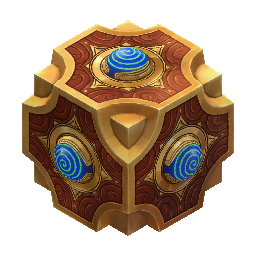
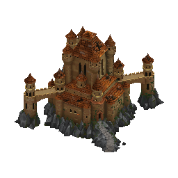
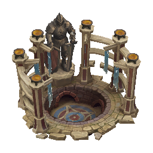
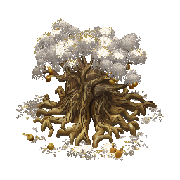
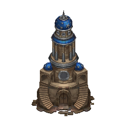
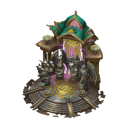
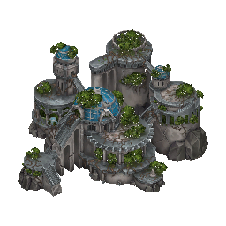
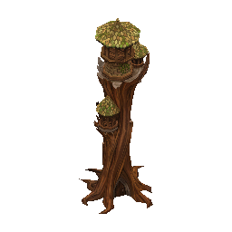

Summon Swarm — available to every hero. Spends focus to spawn eggs → Larvae appear next turn. Larvae count scales with total HP of all Hive units in your army. More units = more larvae.
Larvae explode on death dealing AoE damage — can hit your own units if positioned poorly.
No shooters. Every unit is melee. Early game is brutal — survive until T5/T6.
Focus management: shared between Summon Swarm, Heroic Strike, Harvest, and other abilities. Pick one use and commit.
Hive Mind tension: many units get bonuses per unique Hive unit type in army — conflicts with the meta power-stack approach. Still not fully figured out.
Additional Notes
Early game is brutal — Hive is the weakest/least-understood faction. Every unit bleeds, nothing shoots, nothing has early power. Survive until T5/T6.
Pick ONE route and commit:Reaver route: Maelstrom → Maniacal Reaver + Elite Reaver law. Worm route: Zoran → Devourer or Pyro Worm. Hive Queens are a dream build — rarely achievable.
Laws of the Hive lets you unlock T5/T6 unit laws at just 15 law points on Week 1. Always rush this first.
Hive Mind tension — faction wants unit diversity for bonuses; meta wants one dominant power stack. Still unresolved.
Focus management — don't stretch across Swarm + Heroic Strike + Harvest. Pick one use.
No Maelstrom / Zoran = rough game — without either, the faction is very hard to pilot. Consider avoiding Hive in pick/ban if neither is available.
Larvae explode on death — AoE damage to surrounding units including your own. Watch positioning.
Late game payoff is real — Maniacal Reaver with Murderous Glee + max luck/morale deletes 4–5 enemy stacks per round. Pyro Worm as ranged artillery is similarly devastating.
Primal spells = ignored despite being "intended" — community finds no real synergy. Don't prioritize.
Week 1 priority: Laws of the Hive → Reaver/Worm law at 15 pts → build that one power stack → survive early with whatever you have.
HeroesBest hero by far. Reavers get speed/initiative/HP bonus + faster growth. Starts with 2–3 Reavers + Insight (faster leveling = escape hell early).Starts with 2 Worms immediately. Worms eat corpses → heal/revive. Makes early game survivable.Starts with Battlecraft. Not amazing but tier-2 pick if Maelstrom/Zoran unavailable.Starts with advanced Summon Swarm. Good on army-heavy templates — larvae snowball hard.Starts with basic Summon Avatar — strong early. Specialty is weak but Avatar alone makes him viable.Underexplored. Potentially decent — no one plays her yet.Offense — Hive units too slow/fragile to benefit early.Heroic Strike — focus conflict: Heroic Strike vs Summon Swarm compete for same resource.Morale — no shooters, no consistent morale procs. Melee-only army can't rely on it.+1 initiative/6 levels — buff comes too late.Starts with Doom, which is far too expensive before Hive has the stats and mana economy to support it.Resistance — only useful vs players; you die before meeting them.Crystal economy does not improve creeping, scaling, or final-fight power.Hornet specialist — Hornets can't function as power stack.Hive Queen specialist — starts with zero Hive Queens.Primal magic — starts with Anti-Magic (useless early).+1 speed to all (great specialty!) but starts with Battle Magic — dead skill before you have stats. Fatal for Hive early game.Playable filler: not actively harmful, but offers no clear route that beats the faction's stronger specialists.
UnitsInsane attack/initiative/damage. Apex Predator: +50% dmg vs higher-tier targets. Murderous Glee: on kill → immediate extra turn (once/round). Can wipe 4–5 stacks per round with max morale/luck. THE power stack.Direct Worm power-up. Tanky, high damage, corpse eater (heals + revives). Solid all-around.Becomes ranged + Duelist (full melee damage too). AoE shots. Tanky artillery. Devastating late game.Insane initiative. Contaminating Blast (doubled, full attack dmg, massive AoE). Best payoff of T7 line — needs heavy focus investment.More damage/attack/speed. Harvest: eat corpse → +4 atk/def, +1 spd/ini. Preferred Locust upgrade.Parry (retaliates before being hit). Defensive role.Slightly better initiative/speed. Vanguard: +1 attack per unique Hive unit in army. Least-bad T1.Piercing Sting (guaranteed death effect). Fast. Hard to build a reliable stack of.Explode on death (AoE). Weak early. Huge late game with Infernal Rage law: 300 larvae at +1 dmg = massive damage wave.Trades Contaminating Blast for raw damage and speed. Fine when you already have a large T7 stack, but weaker as a payoff target.T1 — too slow, not enough initiative.T1 upgrade — only value: more HP for Swarm calculation. Not a fighting unit.T3 upgrade (Hornet) — insane speed but low initiative → shooters still shoot first. Beats the purpose.T4 — slow, awkward, bleeds. Exists to pad Swarm HP only.T5 upgrade — defense-focused. Unholy Resilience (survives 1 kill shot) is annoying in neutral fights, but weak when piloted by you. Wrong direction.T7 — realistically never reaches your army in normal game.
LawsEach point spent counts as bonus points toward unlocking higher law tiers. Lets you get T5/T6 unit laws on Week 1. Core enabler — rush immediately.Rank 1: +1 morale & luck. Rank 2: +5 morale → Reavers permanently at max luck. Always pick.+1 damage to every unit scales especially well with large Larva waves and remains relevant across the whole army.T6 unit law, accessible at only 15 law points. Increases Worm growth. Rush this (if Worm route).Applies to Dimension Door, Second Wind, all combat spells. Useful when heroes are knowledge-starved.A solid long-term population boost when the game is slow enough for growth to matter.Improves luck consistency and pairs well with Reaver or Worm stacks once the faction reaches late game.Enemies adjacent to Larvae must target Larvae instead. Situational but can be overwhelming.Double-attacking Larvae become meaningful when Swarm counts are high, especially alongside Infernal Rage.Low value because upgrades are already handled in town without spending law points.Boosts primal/damage spells. Hive heroes lack stats to cast them effectively. Design mismatch.Classes
Subclass notes: Subclasses are rare achievements: most games end before either player unlocks one, because they require Expert level in 5 specific skills at once.
Universities are the primary path. A single university visit can hand you 3-4 required skills at once; if you are already close, the subclass becomes realistic immediately.
Only commit if 2 of 3 criteria pass: payoff, achievability, and required-skill quality. Do not wreck a viable build chasing weak payoff or dead skills.
Stat caps do not exist, so doubling-stat subclasses keep real value even above 100 total stats.
Doubles the base stats of summoned Fire Larvae.Niche payoff on an already weak gimmick. Economy and Nightshade are dead skills for Hive Enforcers.Expert BattlecraftExpert WisdomExpert Nightshade MagicExpert LeadershipExpert EconomyGrants a new battle ability. It allows the hero to consume a target corpse, gaining bonus Attack, Defense, and Spell Power until the end of battle.Top-tier because it gives stacking Attack/Defense/Power for the rest of the fight. In a long final, every corpse becomes permanent combat scaling. Required skills (Insight, Logistics, Resistance, Daylight) are all core Enforcer picks — Battle Magic is the only bottleneck.Expert ResistanceExpert Battle MagicExpert Daylight MagicExpert InsightExpert Logistics+200% creature growth in all your cities.Only applies to base growth — not dwelling or law scaling. Far less impressive than it sounds. Requires Diplomacy and Tactics, both unwanted on a Herald.Expert DefenseExpert Summon AvatarExpert Arcane MagicExpert DiplomacyExpert TacticsHeroic Strike deals +2 Damage per each hero attribute point.With 40 all-stats late game this reads as 320 bonus damage — but Heralds have no reliable way to reset Heroic Strike and need Combat+Leadership on top.Expert OffenseExpert SorceryExpert Primal MagicExpert LuckExpert Scouting
DUNGEON
Trombarati Strength — every hero starts with this. 3 stances: Attack / Defense / Power (boosts corresponding stat). Can switch once per turn. At Expert level take Flow sub-skill: every stance switch generates 1 focus charge. Typhon starts Advanced → Expert at level 2 = Flow from the very start.
Fighting Styles — every unit has an alternate attack mode. Default: weak (−50% dmg or worse). After picking that unit's law: Fighting Style deals 1.5× damage (+50%). Core mechanic — without laws they're worthless; with laws they become very strong.
Additional Notes
Primary spell school: Primal — Dragon stance (Power) from Trombarati Strength. Most Warlocks cast big direct damage spells (Lightning Bolt, Fireball). Faction is well-rounded and can react to the map.
Fighting Styles without laws = weak — Don't use them aggressively before picking up the respective unit law.
Power stack options: Medusa Sculptor (best all-around T5 shooter — no weaknesses) · Minotaur (either upgrade — morale constantly, impossible to deal with) · Kafonic Hydra (best early T6, incredible tankiness) · Black Dragon (caster's best friend, magic immunity, high initiative).
Day 1 shooter: Onyx Dancer — Build in every city from the start. Degrades opponent defense to zero very quickly with multiple stacks.
Trombarati Strength → Flow — Expert Trombarati + Flow sub-skill = Heroic Strike every single turn. Typhon has this from level 2 — huge reason she's top tier.
Infiltrators will die — enemies love targeting them. Expect to bleed them throughout the game. Don't over-invest.
Minotaur morale is oppressive — default morale 2 + Eager for Battle (5% per morale point) + Blood for Blood (morale +1 when hit) = effectively always an extra turn. Both upgrades are excellent — Parry (Lord) or Adrenaline Surge (Vanguard). Pick based on feel.
Zachron synergy tip — Dragon stance immediately gives Power. Day 1–2 you can deal 200+ dmg spells. Great early tempo even without other investment.
Heroes+10 Heroic Strike damage, scaling by +5 every 6 levels, plus permanent stacking poison. Starts with Combat, pressures every fight from turn one, and is consistently ban-worthy.+1 attribute per 2 levels, extra XP scaling with level. Starts with Insight. "One of the most favorite heroes in the entire roster." Fully flexible — no direction commitment. Perma ban/pick.Starts with 2 T6 Hydras. Advanced Trombarati Strength → Expert at level 2 → Flow immediately. "Amazing, really really good, most of the time you're going to be seeing her banned."Starts with 3–4 Medusas + growth +1 in all cities. Speed/initiative/HP/stats bonus to Medusas. "Really powerful, fan favorite, banned in many templates."Starts with 2 Minotaur stacks + Leadership. Minotaurs buildable Day 1. "Almost ban/pick tier — the guy that slips past bans and you pick for yourself." Very good.+10% extra spell dmg (+1% per 2 levels). Enemy hero spells deal same % less. Starts with Sorcery + Fireball. Dragon stance (Power) synergy. "Gem in the rough — can carry a game."Starts with 3 Dancer stacks and Twilight. Good early tools, but the ceiling is lower than Dungeon's true carry heroes.Masterful Early Star being undispellable is cute, but the specialty lacks enough tempo or scaling to justify the pick.T1 specialist + Tactics. Viable on very slow maps only. Generally overlooked.Infiltrator specialist + Scouting. "Nobody likes her and I think that is for good reason."Gem economy does not help Dungeon win fights or reach its power stacks faster.Luck specialist. Dungeon has almost no luck synergy (only 2 units benefit). "Gets overlooked for good reason."Arcane magic specialist. "Probably the worst of all school specialists. Arcane spells are nothing special, complete garbage in early game."Masterful Arena's Chosen is hard to convert into a coherent game plan, and the starting skill does not fix her tempo.Army-when-fleeing / Diplomacy. "Not fit for one-hero gameplay."Economy specialist. "Pitiful scrap change — farming banks with avatar/combat is better money."Daylight specialist. "Warlocks don't function with daylight at all. No game plan here."Nightshade specialist. "Falls into same issues as Rockl. Not very interesting at all."
Units
⚠ Every unit has a Fighting Style — its value DEPENDS on picking the corresponding law (+50% dmg). Without the law: weak. With the law: strong.
Staggering Hits: target can't counterattack until end of round. Shadow Strike: ranged attack ignoring defense (no retaliation, full range damage). "Very very good." Fighting Style becomes amazing with law.Reduces defense by 2 per attack. Initiative jumps to 7. "Just doing it better." Essential shooter.Draconic Blade: melee attacks deal DOUBLE damage. Swift Strike (no retaliation). "One-shots the hell out of anything they touch." Use when you can't keep the enemy at range.+3 def, +2 ini, +1 spd. Parry: counterattack hits BEFORE the incoming attack lands. Unyielding: ignores attacker's attack values until end of round. "Amazing, very toxic to play against."+3 atk, +1 base morale. Adrenaline Surge: on morale proc → +2 speed, +8 atk/def until end of next round. "Absolutely amazing and devastating" — Minotaurs morale constantly.Dualist (full melee dmg + still shoots). Petrification (stuns 1 turn + target takes double dmg, doesn't end turn). Sharpshooter. Slither Away. "My favorite unit of the entire faction. No weaknesses."+10 defense, +20 HP. Regeneration (repeatable full HP regen). All Hands on Deck (counterattack uses full Fighting Style). Poisonous Blood (adjacent enemies −25% dmg when it takes damage). Speaker's preferred.Very high initiative. Immune to all spells tier 5 and below. Fires of Dominion (+1 morale/luck to friendlies, −1 to enemies). "King of dragons. Best with caster heroes — tanky, first mover, magic immune."Day 1 shooter. Thousand Cuts (−1 def per attack). Bouncing Fighting Style hits 2 targets (→ −2 def with law). Solid before upgrade.More speed, 6 defense. Toxic Spear: target +25% dmg taken until end of round. Better than Toxic variant as a power stack.Double counterattack. Toxic Blood (adjacent enemies −25% dmg when damaged). Niche: specific hard camps needing extra damage output.Counter Shot (counterattacks ranged attacks). Marble Arrows (−2 initiative to target on ranged hits). "Has far less stats than Sculptor. Not a believer." Only pick for range-vs-range build.More damage/attack/initiative/speed. Weakening Venom (target −25% dmg until end of round). "If they're your damage battle stack, I can see Infernal being the choice."11 speed, much more attack. Adjacent enemies always deal minimum damage (perma-curse aura). Dragonfly ability (blink + AoE) costs 5 focus — but focus cap is 3 → practically unusable. Loses initiative and tankiness. "Most of the time Black Dragon is preferred."Slow, low initiative, Vicious Spit deals −50% dmg. More annoying to fight against than to use yourself.T2 upgrade — loses Staggering Hits (the best part of Guile). Gets Veil of Shadows (too expensive focus cost). "Probably the worst of the two upgrades."
LawsOne law per unit type. Each makes that unit's Fighting Style deal +50% more damage (1.5×) + extra stats. The cornerstone of the faction — Dungeon barely functions without these. Priority: pick the law for your power stack unit ASAP.All hero spells permanently gain +1 level. Every cast, forever. "Amazing. The game feels better. It feels nicer."Eliminates marketplace markups, letting resources convert cleanly into whatever Dungeon needs for upgrades and tech.75 dust (4 pts) + 150 dust (4 pts higher). Dungeon has more dust laws than any faction — needed for item/unit upgrades.A broad quality-of-life law that improves positioning and makes Dungeon's unit tactics easier to execute.Provides moon points with little opportunity cost; a useful pickup when it fits the route."Dungeon is not a focus-focused faction. Not a faction that worries about focus points." Only relevant for Ashen Dragon combo which is already impractical.Classes
Subclass notes: Subclasses are rare achievements: most games end before either player unlocks one, because they require Expert level in 5 specific skills at once.
Universities are the primary path. A single university visit can hand you 3-4 required skills at once; if you are already close, the subclass becomes realistic immediately.
Only commit if 2 of 3 criteria pass: payoff, achievability, and required-skill quality. Do not wreck a viable build chasing weak payoff or dead skills.
Stat caps do not exist, so doubling-stat subclasses keep real value even above 100 total stats.
The hero gains +100% Attack.~50% damage boost in practice. Most skills are good (Offense, Leadership) but Diplomacy is wasted. A fun novelty pick, not a build-around.Expert OffenseExpert WisdomExpert Nightshade MagicExpert LeadershipExpert DiplomacyThe hero gains +100% Defense.Marginally better than Balthasar's — defense never becomes wasted value. Sorcery is the unlikely bottleneck on an Overlord. Mid across all three criteria.Expert DefenseExpert SorceryExpert Daylight MagicExpert LuckExpert ScoutingThe hero gains +100% Spell Power.Top-tier because doubling Spell Power turns 80 into 160 and stays valuable at any stat total. This is the most frequently seen subclass in actual play; Battlecraft and Tactics are the hard requirements, and a university can make it very realistic.Expert BattlecraftExpert Summon AvatarExpert Primal MagicExpert InsightExpert TacticsProduces +10 000 Gold daily.By the time you'd achieve this, gold income is already irrelevant. Dragon Utopias and Research Labs generate far more. Economy is a dead requirement.Expert ResistanceExpert Battle MagicExpert Arcane MagicExpert LogisticsExpert Economy
GROVE
Murmuring (every Grove hero has this skill) — starts every fight with extra focus charges, abilities usable from turn 1. Key sub-skills: Child of the Woods (+30 mana capacity = free Knowledge at game start), Strong Connection (each focus spent → +1 all attributes for rest of fight). Reach Expert Murmuring fast — usually Day 1.
Focus Charges — core resource. Spent on unit abilities, Awakening, Bloom. Massive synergy throughout the roster.
Awakening — most T3–T7 units spend 3 focus charges to awaken → gain speed, initiative, HP and unique abilities for the rest of battle.
Dusk Hoplet BLOOM exploit (core early strategy): Buy Dusk Hoplets Day 1 → split into one-stacks → get Expert Murmuring → Child of the Woods → in every fight activate all Blooms (+3 spell power each, free) → summon Avatar → Avatar permanently keeps those boosted stats. Zero mana, zero losses, clears impossible fights. "Criminal not to use."
Additional Notes
Dusk Hoplet + Avatar is mandatory — Day 1: upgrade Hoplet building, buy Dusk Hoplets, split into one-stacks. Expert Murmuring → Child of the Woods. Every fight: Bloom spam → Avatar at boosted stats → permanent. Zero mana, zero losses, beats impossible fights.
Theurgy + Avatar = best combo in the game — Avatar costs 0 mana. With Theurgy you cast any real spell + Avatar in the same round for free. If playing Sully or any Avatar build: draft Theurgy.
Fawn Archer is default, Fawn Warrior is Ginger Tale-only — Archer: Sharpshooter = double damage vs any shooter. Warrior: explosive melee + Parry 1v1 pick-offs. With Ginger Tale the stat bonuses make Warriors dominant.
Grove wins with T1–T2 units, not high-tier — "A dishonest Avatar enjoyer with Dusk Hoplets is already 2 zones ahead of an honest Quillin builder." Forced high-tier builds lose tempo badly.
Quillin build path is brutal — Mage Guild → Golems → Niads (will bleed out and disappear) → finally Quillins. ~6,500g to unlock + 1,400g per unit. Only attempt if the map gives you a strong head start on resources.
Vatavna is format-specific — Vendetta: instant ban/first pick, broken from turn 1. Any other format: specialty does nothing until you find global map spells (at best late Week 1). Average hero elsewhere.
Law tree is mostly a write-off — Best early pickups: Elite Vineards (keep tanks alive), Nature's Wildness + Luck of the Fittest (hitting/luck setup). Most impactful laws come at 50+ points when the relevant units are already gone.
HeroesAvatar immune to magic dmg, +1 effective spell power per 3 levels. "Avatar is king. It's the meta. She starts with it and specializes in it. Ban/pick category — can do fights from the start that others can't handle."Loses only 25% dmg per bounce (instead of 50%). "Absolute gigachad. Clears the map. Insane tempo — you can do fights no other hero can, way earlier. Usually an instant ban. Super super great."Extra XP, Civic Innovation sub-skill doubles law points from all map objects. "Almost permanently picked or banned. Never even got to play her." Flexible, no direction commitment, accelerates everything.+growth, initiative, HP, speed to Fawns; starts with 3 Fawn stacks. "My most-played hero on this faction. Early Fawn power stack clears the entire map with ease — one-shotting tier 7 units." Unique exception to 'T1 specialist = bad' rule. Use Fawn Warriors (not Archers) specifically with her.All basic attacks (range, melee, long-reach) deal significantly more dmg, scaling per level. "Good baseline hero. A step below Sully and Halen. Slips past bans — you'll actually get to play him." Imagine luck procking on an offense specialist.Must-ban / must-pick on Vendetta. Casts Dimension Door twice per turn from turn 1 — steamrolls the entire map with knowledge alone. Average on other formats — specialty does nothing all of Week 1.Sleeper pick. Fireball gives immediate burst, while Advanced Murmuring enables an instant Child of the Woods route and early Dusk Hoplet spell-power stacking. Underexplored but dangerous.Pathing specialist (no terrain penalty, +sight). "Not popular. Not good enough. You want your hero to do more powerful things."Battle Magic + Masterful Guillotine. "Way too slow. Other spells one-shot things before this stacks up. Not good enough, not fast enough. No bueno."Luck specialist. "Hard to rely on. Can already reach 45% lucky strike chance without her. Better to scale those lucky hits with Gorl's offense."Crystal income does not solve Grove's real priorities: early tempo, Avatar scaling, and reliable fight control.Diplomacy / army when fleeing. "Not a 1-hero kind of hero. Not interesting on ladder."Starts with herbmancers + Theurgy. "Army is slow and hard to use. Theurgy starting skill is whack — can't afford expensive second spell early anyway. Bad hero."Masterful Firewall (+1 round), Primal Magic. "Middle of pack best case. Really expensive spell, better ways to play."Masterful Icebolt (doubled initiative penalty). "Icebolt is a damage spell — extra initiative reduction barely matters. Better picks."Masterful Caven + Primal Magic. "Not really good. Terrible mana-to-damage ratio — just cast Lightning Bolt for 30% of the mana and deal almost as much."Masterful Mirror Copy (can target enemies). "As cool as it is, not good in 1-hero — by the time you reach PvP one of you is far stronger, and it's usually NOT the person copying the opponent's army."2 focus/round + enemy loses same, starts with Sorcery. "Pretty niche and fringe. Don't really need that much focus — Murmuring already gives plenty."
UnitsSharpshooter (full damage at any range = effectively double damage vs other shooters). Parry (retaliates before being hit). "Probably my favorite tier 1 unit in the entire game." Go this in almost every game.Bloom: +3 hero spell power until end of combat (free ability, uses their turn). Multiple one-stacks → stacked temporary spell power → snapshot permanently onto Avatar. "The mage's best friend. The CORE early game strategy."More stats, +2 base damage, +2 speed, 4 initiative. Parry on a melee unit = 1v1 pick-offs via positioning. "Payoff is really big but requires work." Only recommended with Ginger Tale — otherwise always Fawn Archer.Generates 1 focus charge (free, once per battle). Swift Strike (no counterattack). Decent for focus generation combos via Strong Connection Murmuring.Tanky golems — boring but keep you alive while casting. Crystal Iad: Thorns — any T5 or below unit attacking it dies instantly. Both can awaken. "Exist with a purpose."Echoes of the Murmurwood: hero can use spell book AGAIN this round. +1 spell power level, −2 spell cost, +8 mana per focus charge. = effectively 3 spells per round with Theurgy. Use as a one-stack. "One of the most unique abilities in the entire game." (Same-school lockout still applies.)Direct upgrade: more speed, −2 spell cost (Magi equivalent), friendly creature immune to magic dmg for 1 round (rarely used). Secondary choice to Murmurman.Focus generation (Cloud9: +2/round). More speed/damage. Awakening: Thunder Strike (defense → attack), Ball Lightning (blink + AoE magic dmg to adjacent). Power stack if you can build it.Scintillating Scales: adjacent enemies take extra magic damage — good one-stack amplifier. Misform: ignores obstacles, −35% dmg taken until end of round. Utility-focused.Immortal: first death → egg → revived next round (150% original units, egg needs 3 hits to destroy). Awakening: Heatwave (dispels ALL enemy buffs + ALL friendly debuffs). "Toxic to fight in the wild." Aggressive stat line.Heals 25% of lost HP at start of each turn (can revive fallen units). Far tankier than Flaming. "More popular and consistent version — reliable every turn regardless of fight speed." Awakening: Supernova (AoE + fire DoT, rarely practical).The base unit is mostly filler; upgrade immediately so Hoplets can contribute focus or Bloom value."Garbage unit. Slow, clunky long-reach melee. Hard to position. Main selling point: available Day 1 — that's literally the only reason it's seen."Currently out of the competitive meta and usually built only as a prerequisite for Qilins or Phoenixes.Solid stats but build path is brutal — 6,500g to unlock + 1,400g per unit. Rarely reached in real games.
Laws
"Grove has the most garbage law tree I've ever seen in any game. The worst law tree of all factions." Plan around heroes + units — don't rely on law payoffs.
Lucky strikes deal +50% more damage. Core of any luck-focused build.Friendly creatures have 1% lucky strike chance per luck point (normally ~4% → increases to ~7%). "Basically doubling your luck without the luck skill."+5 HP per point to Vine/Crystal Iads. "Most popular early law — keeps your tanks alive."+50% melee damage to Fawns. Only good for Fawn Warrior + Ginger Tale build. Does NOT improve Fawn Archers.A modest but useful boost when Hoplets remain part of the army longer than usual.Herbmancer abilities cost 1 less focus charge. Makes Murmurman echo cost 1 instead of 2. "If you're running Murmurman one-stacks, you probably want this."Take only when committing to a Qilin power stack; otherwise the timing is usually too late.Worth considering when Phoenixes are the intended late-game stack, but irrelevant in faster games.Awakening costs 1 less focus charge (3 → 2). "Actually pretty legit." Requires 50 law points — very late.Extra sight and movement are useful once unlocked, though the law competes with more direct fight power.+1 focus charge per round. "Grove is focus-hungry — also pretty good."+2 spd/ini to Fawns/Hoplets/Herbmancers. Requires 50 law points — "by that point those units are gone from your army. Strong effect, bad timing."Heroic Strike +10 dmg. "Faction has zero heroic strike synergy. No heroes with Combat. Weird inclusion."Hiding army details rarely changes competitive decisions enough to justify the law points.Arrives after the hero purchase window has usually passed, so the payoff is mostly wasted.Wood discounts arrive too late to affect the important build-order bottlenecks.Too narrow and inconsistent: temporary scroll value rarely decides meaningful fights.Cooldown reduction is too conditional compared with Grove's direct focus, luck, and unit laws.Preventing retreats is rarely worth law points in the formats this guide targets.Too slow for current competitive game lengths; the payoff usually arrives after the decisive fights.Classes
Subclass notes: Subclasses are rare achievements: most games end before either player unlocks one, because they require Expert level in 5 specific skills at once.
Universities are the primary path. A single university visit can hand you 3-4 required skills at once; if you are already close, the subclass becomes realistic immediately.
Only commit if 2 of 3 criteria pass: payoff, achievability, and required-skill quality. Do not wreck a viable build chasing weak payoff or dead skills.
Stat caps do not exist, so doubling-stat subclasses keep real value even above 100 total stats.
Generates maximum Focus Charges at the beginning of each round.All required skills are genuinely good, but the payoff is pointless — Wardens already enter combat with max focus via the Murmuring skill.Expert ResistanceExpert Battle MagicExpert Daylight MagicExpert LeadershipExpert InsightFriendly creatures have their maximum possible Luck and will always land a Lucky Strike when attacking.One of the best subclasses in the game. Guaranteed lucky strikes become absurd with Grove laws: Nature's Wildness and Luck of the Fittest can push this toward triple damage on every attack. One Diplomacy slot is the only real cost.Expert OffenseExpert WisdomExpert Primal MagicExpert LuckExpert DiplomacyThe hero can use all spells.Druids already have enough powerful spells and only cast two per turn. Economy is a dead requirement, and more spells have no value when you can't cast them all.Expert DefenseExpert Summon AvatarExpert Arcane MagicExpert ScoutingExpert EconomyHeroic Strike deals Damage to all enemies in a 1‑hex radius.Druids don't specialize in Heroic Strike and need Combat+Leadership on top — effectively a 7-skill build for a mediocre payoff.Expert BattlecraftExpert SorceryExpert Nightshade MagicExpert LogisticsExpert Tactics
NECROPOLIS
Necrotic Energy — shown on the left of the hero portrait (max 1250). Each raised unit costs energy (5 per Skeleton). Refills by taking fights with necromancy toggled off.
Necromancy Power % — after a fight you raise that % of the highest-tier enemy creature as undead. You must already have units of that tier in your army — otherwise you just refill Necrotic Energy instead.
Tier targeting — want Skeleton Archers? Fight T1 creatures with Archers in army. Want Liches? Fight T5 creatures with Liches present.
Toggle — click the spell in the spellbook to turn necromancy on/off when you want to save energy for a more important fight.
Additional Notes
Skeleton Archer is the faction's early cornerstone — Start Ankos, get Basic Offense, then Advanced Offense → Shadow Blades sub-skill (+1 base damage = ~50% more output on archers). Add Drums of War artifact. A massive Skeleton Archer stack clears the map safely and scales deep.
Two main openers:Ankos route — skeleton archers + offense from turn 1, safe ranged creeping. Kel Ghoul route — starts with Dread Knights, +2 growth (vs. normal +1), fastest early game. Pick based on template and bans.
Liches are the carrier — slow shooter but Rewind Death (resurrect, 2× per battle) is what makes Necro sustain through mid/late game. Always prefer Sanguine Lich over Pestilent Lich unless running full DoT build.
Nightshade magic is the primary school — Natural Calm (−30% enemy damage to all), Despair (DoT damage, amplified by laws). Many laws push Nightshade/DoT synergy further.
Terrain package wins finals — Necropolis heroes always fight on native terrain (law). Add Return to the Soil (+1 speed on native), Death's Presence (enemy non-Necro −dmg/+dmg taken). Dominant in finals regardless of map location.
Vampires: quantity over quality — Do not play them like HoMM3 vampires. Stats are genuinely terrible — T5 units out-brawl them. But they're the only T7 with base growth 2 and high initiative. Treat as utility/meat you can afford to bleed.
Slow formats: Darius or Funella — Necromancy power compounds over time. On fast formats they scale too slow; on Exodus/Harmony they become unstoppable.
Hero depth is exceptional — Even after 3 bans there is always another top-tier option. Opponents can never reliably shut all routes.
HeroesUnits take significantly less damage. Starts with Armor. King of tanks — armies are nearly impossible to bleed. Very often banned outright. A tier, always worth considering.Starts with Basic Offense — crucial. Get Advanced Offense ASAP → Shadow Blades = +1 base damage to all archers (~50% more output). Excellent early game. Skeleton Archers scale tremendously with stats.+2 growth instead of the usual +1 — insane. T6 units from day 1 clear the map easily. Starts with Tactics (not ideal but acceptable). Amazing hero despite the start.SPRINT S tier on Sprint. A tier on other formats. Masterful Web → everything slowed → Liches/Skeleton Archers shoot unmolested. Starts with Logistics. Expert Slow was banned outright in HoMM3 for a reason.EXODUS Starts with Advanced Necromancy that grows over time. Priority pick on slow formats (Exodus, Harmony) where necromancy power compounds. Generates enormous armies in the late game.Despair normally cannot target undead, embodiment, or constructs. Laura bypasses all restrictions. Level 4 = AoE damage dealing efficiently per mana. Very strong early creeping and into lategame.Immediate Rewind Life access. When no units to revive, surplus goes on top of stack (temporary overheal). Starts with Vomitury — dead skill early. Excellent despite the bad secondary.VENDETTA Necromancer version of Darius. Good alternative if Darius is banned. Preferred on Vendetta or knowledge-heavy templates.Starts with Resistance (does nothing early) and specializes in a spell you won't cast for weeks. Playing without a hero for the whole early game. Not competitive currently despite the interesting specialty.Solid specialty. Wisdom start is not bad but doesn't help early. Middle of the pack — pick 7th or later after top heroes are taken.Grave Robbers are slow and hard to use as a power stack. Luck is not a preferred early skill. Hard to justify.Specialty feels odd — more Nightshade levels than needed. By the time it matters, the opponent just picks Daylight or Primal, bypassing it entirely. Weird niche.Scouting is not a preferred early skill. T3 units are fine but not enough to build around. Not popular.Flea hero, Diplomacy — designed for multi-hero play, not 1-hero competitive formats. Not interesting.Battlecraft (generates resources). A specialty needs to give fighting power, not just mercury. Bad.Arcane magic specialist. Arcane spells are terrible in the early game. No competitive value until very late — by which point any other hero would be better.White/Wraith specialist, starts with Recruitment — one of the worst skills in the game. Trash.Gold economy does not provide enough fight power or necromancy scaling to justify the hero slot.
UnitsThe faction's early engine. Low stats but density + Raised Dead = avalanche. Shadow Blades (+1 base = 50%+ boost), Drums of War amplify further. "Giving skeletons a wooden bow solved the whole problem."40% of damage dealt converts to HP — creates temporary units that can be bled without losing real army. Forces enemy to move to random hex (great against shooters). High initiative/speed. Preferred upgrade over Phantasm.The carrier. Slow shooter but Rewind Death (mass resurrection, 2× per battle) makes Necro armies self-sustaining. Better HP restore multiplier. +XP for hero. Always prefer over Pestilent Lich.Double Strike — too strong to give up. War Incarnate: each attack reduces enemy attack by 1 and gains equal (can't be dispelled). Hits twice so compounds fast. High initiative. Default over Hollow Reaper.Only switch if opponent runs Twilight (disables shooters). Otherwise always go Archers.Nightmares — DoT on each hit. +4 defense (vs. Brave's 0). Pick for DoT-focused setups (pairs with Pestilent Lich).Insane initiative and speed. Call of the Pack: summons a temporary shadow army of itself. Ability is slow to come online (requires building focus) but the concept is strong.Bone Crusher (reduces target defense by 1 per hit, gains equal), DoT wound attacks, Protect the Fallen (+3 defense per friendly death). Tanky/DoT option for defensive setups.Best of the T4 upgrades. Digs up Undead Pets — 1 Kennelmaster = 1 Pet summoned. Decent 5/5 speed/init. Ability doesn't end turn. Niche but can be very strong in the right setup.AoE strike. Dev's Embrace: triggers all DoT effects on target instantly (full-duration nuke). For DoT builds (Despair + Pestilent Lich + Black Death law). Loses Rewind Death — major downside.Better raw stats, Death Star (kills 1 extra unit per attack), Reap Without Sewing AoE (2 focus). Loses Double Strike — the critical weakness. Also competes with Liches for focus.No counterattack + vampirism 40% (not vs. undead/embodiment/constructs). Only T7 with base growth 2 — accumulate large numbers. High initiative. Run for quantity, not individual power.Inexcusably bad stats for T7. Gets out-brawled by T5 units. Vampirism 40% doesn't work against undead, embodiment, or constructs — which covers most of the game's units.Blood Transfusion (vampirism for a friendly unit, 3 focus), Corpse Explosion (AoE). Just a worse Rewind Death at much higher focus cost.Can dig Whites for free focus but the unit's abysmal speed/initiative makes it unworkable. Liches need those focus charges for Rewind Death.
LawsTerra Mortis: Necropolis heroes always battle on native terrain. Return to the Soil: +1 speed on native terrain. Combined with Death's Presence: massive damage swing in any final battle regardless of map location. "Very cool."Enemy non-Necropolis creatures deal less damage and take more. Your non-Necropolis creatures get the inverse. Perfect complement to the terrain package — stacks into a dominant fighting position.Lich healing abilities restore significantly more HP. Since Sanguine Lich + Rewind Death is the core sustain engine, doubling its output is critical on most builds.Vampirism of all friendly creatures +50%. Good synergy with the faction's inherent vampiric playstyle and large vampire stacks.Friendly creatures gain one extra free counterattack per round. Excellent on vampires — enemy hits → retaliation → vampirism restores → enemy hits again → retaliation again. Very strong loop.Four laws on the left side of the tree increase necromancy power. Stack for higher Raised Dead volume. Essential on slow formats with Darius/Funella — necromancy compounds exponentially.Nightshade spell boost. Nightshade is the faction's natural school — Natural Calm, Despair, all benefit. Good pickup on most builds.Enemies take up to +100% more DoT damage (upgraded). Core of the Despair + Pestilent Lich DoT build. Rush this if playing DoT archetype.+6 maximum damage (more at 2 pts). Huge on a double-strike unit like Avatar of War that also compounds via War Incarnate.Take if running Ankos or any skeleton archer strategy. They're the early engine — scaling their stats directly helps.Pets/Barghests gain significant initiative. High initiative = more turns = more impact. Good if investing in T3 units.More HP + growth boost for vampires. Good long-term investment for building vampire numbers.Enemy loses 1 level on all magic schools. Surprisingly strong combined with Resistance. Especially effective against necromancy-heavy or multi-school caster opponents.Low impact compared with laws that improve necromancy output, terrain control, or sustain.Low priority — skippable on most builds.Classes
Subclass notes: Subclasses are rare achievements: most games end before either player unlocks one, because they require Expert level in 5 specific skills at once.
Universities are the primary path. A single university visit can hand you 3-4 required skills at once; if you are already close, the subclass becomes realistic immediately.
Only commit if 2 of 3 criteria pass: payoff, achievability, and required-skill quality. Do not wreck a viable build chasing weak payoff or dead skills.
Stat caps do not exist, so doubling-stat subclasses keep real value even above 100 total stats.
Enemy creatures always have their minimum possible Luck and will always land an Unlucky Strike when attacking.Decent because it is effectively about 50% damage reduction on all incoming hits. The payoff is real, but Primal Magic and Scouting are hard to find on a Death Knight — only pursue with university support.Expert DefenseExpert SorceryExpert Primal MagicExpert LuckExpert ScoutingAll enemies always have their minimum possible Morale.Minimum morale triggers rarely and the effect is unreliable. Requires Diplomacy and Tactics — too many unwanted skills for too small a payoff.Expert ResistanceExpert WisdomExpert Nightshade MagicExpert DiplomacyExpert TacticsAfter an enemy stack is killed in battle, a temporary stack of friendly Wights appears in their place.Decent because it is easy to achieve: Logistics, Insight, and Avatar are core Necromancer picks anyway. Battlecraft is the only real bottleneck. Payoff is modest, but you sacrifice almost nothing.Expert BattlecraftExpert Summon AvatarExpert Arcane MagicExpert InsightExpert LogisticsNecromancy works for all creatures and not just the Undead.Requires a non-undead army, which almost never happens in online play. Offense and Tactics are also unlikely picks on a Necromancer.Expert OffenseExpert Battle MagicExpert Daylight MagicExpert EconomyExpert Tactics
TEMPLE
Temple is a buffing faction. Every unit has a buff ability. The T7 Angel collects all buffs given to any friendly unit via Forging Perfection — so your other units don't buff themselves, they buff your angels.
Daylight magic is the primary school. Core spells: Bless (T1, +35% dmg all units) · Arena's Touch (T2, +20% HP + initiative all units) · Riposte (T3, all friendlies counterattack before the enemy attack lands — "very toxic") · Radiant Armor (T4, −40% dmg from any source all units) · Judgment (T5, daylight's Implosion equivalent).
Morale synergy — many units and laws stack morale. Realistically reach 45%+ trigger chance = units effectively acting twice constantly.
Additional Notes
All other units exist to buff Angels — Don't buff your Austringers or Cavalry for their own sake. They buff the angels via Forging Perfection. Angels shoot hard; everyone else feeds them buffs.
Apotheosis > Archangel (usually) — Archangel is the highest damage unit in the game, but Apotheosis has 75 more HP, melee+range Dualist, and a negative-effect immunity aura. "Hard to justify Archangel when Apotheosis exists."
Riposte + Ventral Strike = the combo — Riposte: all friendlies retaliate before being hit. Ventral Strike: those retaliations deal +100% damage. Opponent attacks you → they eat a full hit first → then their attack resolves. Very toxic.
Heroic Strike is always good — Mandal specializes in it, but any hero with Combat → Leadership works. Scales with hero stats on every format. "Whenever they can get their hands on it, they heroic strike the hell out of the map."
Encouragement is one of the best cheap laws in the game — 4% → 7% per morale point. With a few morale stacks, your units are effectively taking extra turns constantly.
Austringers are your Day 1 power stack — Build Crossbowmen and upgrade to Austringers immediately. Double shot + Forging Perfection synergy means angels also benefit from every Austringer ability proc.
Inquisitors are a design puzzle — Immune to magic, ignore 30%+ attacker attack, AoE strike. Sound incredible. In practice: "Everyone ignores them, then heroic-strikes them at the end of the fight." Meta still figuring them out.
Morale stacking endgame — Units + leadership skill + Encouragement = 45% morale trigger. AOS hero pushes it further. At that level your units are basically acting twice.
Sunspear Cavalry scales throughout the fight — Every morale proc, every luck proc, every positive effect = +1 base damage permanently until end of battle.
Mary Elias is format-dependent — Vendetta: best hero in the faction by a wide margin. Any other format: average. Check the template before considering her.
Heroes+1 attribute per 2 levels, accelerated XP growth. "100% ban or pick rate." No direction commitment — caster, might hero, Avatar summoner, anything. "Solid stock standard."Heroic-struck targets take +10% more damage for the rest of the round. "Never disappoints." Even if army bleeds out, the hero alone functions well. Debuff stacks with multiple heroic strikes per fight. Strong on every format.At Advanced Offense, unlocks Archery sub-skill. Shooter power stack with Austringers. "Really good, amazing hero." Usually slips past bans. Archery + Austringers = devastate the map."Amazing — Gunnar Tazar type hero." Best on slow/late-game formats where hero stats scale high. Strong long-term carry.DD, TP, Second Wind, Fly — all castable +1 times per turn. Max mana +10% (+5% per 5 levels). Vendetta: best hero in the faction by a wide margin — must-ban every game. Average on other formats (needs global map spells available).Best hero in the faction for Sprint — road movement gives massive extra tempo on a format where every step matters. Outshined by Pip/Mandal/Kestrel on other formats.+1 growth in cities, starts with 2 Light Weaver stacks + Heavenly Blades spell. Heavenly Blades + Austringers = ~150 flat extra dmg per attack. Niche — "not that great of a hero overall."Old HoMM3 Bless effect + 35% damage buff combined. Some good players experimenting. "Has potential."Late-game morale stacking dream. Theoretical 70%+ morale trigger. "Nobody has tried her yet. Overlooked despite interesting specialty."The kit reads powerful, but double Daylight casting is mana-hungry and harder to leverage than the top Temple heroes.Scouting and pathing utility are not enough to compete with Temple's fight-winning specialists.T1 specialist (triple stack). "Newbie trap. Tempo is too high — you move on from tier ones too early."Gem economy and Recruitment do not provide enough early fighting power.Cavalry specialist. "Cavalry dwelling not available at spawn → awkward setup. Rarely tested."Masterful Healing Water is too narrow; Temple needs tempo, scaling, or decisive combat pressure.Masterful Arena's Touch (+1 speed version). "Not good enough to justify pick."Masterful Vulnerability + starts with Nightshade. "Wrong faction — Temple synergizes with daylight, not nightshade."Pure economy is not competitive unless the hero also solves fights, and Clarissa does not.
Units
Angels are the core identity unit. All other units exist to buff them via Forging Perfection.
Double Shot is enough to define the unit. Austringers are Temple's Day 1 power stack and should be built in every city immediately.10% bonus dmg per hex moved, 40% penetration, +2 morale aura. Gains +1 dmg per positive effect received (morale/luck → permanent scaling throughout the fight). "Monster power stack."Melee + ranged Dualist. Immune to all negative effects + aura (adjacent friendlies also immune). +75 HP vs Archangel. "One of the strongest units in the entire game."Ranged unit. Forging Perfection: receives every buff given to any friendly unit. Refract: copies all positive effects to another target. "Build every other unit to buff your angels, then shoot the opponent's face."Double strike, range defense. "Generally more useful" of the two T1 upgrades. Tanks while hero heroic-strikes.Tankier (+3 HP, +def). Aegis aura: adjacent friendlies take −30% ranged dmg. "Take some just for the T7 dwelling fight against angels."Sharpshooter (full dmg at any range) + Piercing Shot (target +25% dmg taken). "Pick Austringer almost every time — Marksman only situationally better vs T7 dwelling."Infinite retaliations, faster. Valiant Cry: +10 attack, +1 ini (strong focus dump). "Griffins are filler — bleed out throughout the game."Loyal Protector: counterattacks each time an adjacent enemy attacks a friendly creature. Anti-melee utility to protect power stacks.Dispel + stronger Inner Glow buff (+2 spd/ini). "One-stack utility — buff your power stack every turn for 1 focus."Power stack version. Gains +1 base damage per positive effect received — scales throughout the fight.Charge: all friendlies +1 spd/ini for 2 rounds. "One-stack utility for focus dumps."Immune to all magic, ignores 40% attacker's attack, massive HP, +2 focus when hit. Nigh-unkillable but hard to use effectively.Still immune to magic + unyielding. More attack/dmg/speed than Mother Superior. "Offensive inquisitor — still clunky in practice."Sharpshooter, highest damage in game, +5 atk and +2 ini vs Apotheosis. "Needs full protection and buff focus. Hard to justify when Apotheosis exists."Fine Bolts ability not worth using without angel synergy. Upgrade to Austringer ASAP.Filler flyer with awkward handling. Use Griffins as temporary bodies and expect them to bleed out.Immune to magic, decent stats — but "nobody targets them, everyone ignores them, then heroic-strikes them at the end." Meta hasn't figured out how to use them.
LawsEvery morale point gives 7% trigger chance instead of 4%. Cheap for its tier and one of Temple's most efficient scaling laws.25% hero spell power → friendly creature attack; 25% hero knowledge → friendly creature defense. "Battle magic as a law. Pick it up, play the game, get significantly more powerful."Angels gain 25% of hero's atk/def (50% at 2 pts). "Standout law — makes all your hero stats directly more efficient on your angels."All Daylight spells gain +1 level, directly improving Temple's primary magic plan.Counterattacks deal +100% damage. Combined with Riposte (T3 daylight): target takes a full-power retaliation before their attack lands. "Honestly amazing."Buffs last longer. Good early when buff duration is lacking before spell power scales.A useful utility pickup when the main combat laws are already secured.Expensive, but initiative is one of the most valuable stats in late-game fights.Griffins +5 HP · Light Weavers +2 dmg · Cavalry armor pen + speed · Inquisitors ignore more attack. Situational — take if building around that unit type.Late game only. Bypasses needing Wisdom or magic school skills. "Casting direction is usually figured out before this comes online."Too defensive and location-dependent: if Temple is relying on home-terrain protection, the game is already going poorly.Low value. Skip for higher-impact nodes.Classes
Subclass notes: Subclasses are rare achievements: most games end before either player unlocks one, because they require Expert level in 5 specific skills at once.
Universities are the primary path. A single university visit can hand you 3-4 required skills at once; if you are already close, the subclass becomes realistic immediately.
Only commit if 2 of 3 criteria pass: payoff, achievability, and required-skill quality. Do not wreck a viable build chasing weak payoff or dead skills.
Stat caps do not exist, so doubling-stat subclasses keep real value even above 100 total stats.
Heroic Strike deals +60 basic Damage.Top-tier for combat+leadership builds. +60 base damage stays relevant even late game — enough to one-shot meaningful threats — and most required skills (Offense, Leadership, Luck) are wanted anyway.Expert OffenseExpert WisdomExpert Nightshade MagicExpert LeadershipExpert LuckFriendly creatures always deal maximum and take minimum Damage.Good effect, but requires Tactics, Diplomacy, and Avatar — mostly unlikely or unwanted on a Knight. Not realistically achievable.Expert BattlecraftExpert Summon AvatarExpert Daylight MagicExpert DiplomacyExpert TacticsEnemy hero can use each spell only once per battle.Required skills are solid (Armor, Battle Magic, Insight) but the payoff is weak — late-game fights are decided in 2–3 turns anyway.Expert DefenseExpert Battle MagicExpert Arcane MagicExpert InsightExpert ScoutingAll the hero's spells always cost 0 mana.Completely useless — mana is trivial late game. Economy is a dead skill requirement.Expert ResistanceExpert SorceryExpert Primal MagicExpert LogisticsExpert Economy
SCHISM
Every Schism hero starts with Communion. Each fight won = +1 communion level (max 6 by default, extendable via laws). Each morning you lose half your communion (rounded up).
Shadow Army — each communion level gives 3% extra units at the start of every fight. With Celestial Abyss (expert communion subskill — pick this almost always): 4% per level = 24% extra army at max communion. These bonus units can be bled without losing your real army.
Only affects Schism faction units — shadow army does nothing for non-Schism units picked up along the way. Vendetta/mixed-army formats reduce its value.
Finals caveat — in tournament formats that skip a day before the final battle, you enter with only half communion. The Abyss Stares Back law fixes this by giving max communion at day start.
Summoning Rights — Ra'Shoth (T1), Grand Shoth (T4), and Abyssal Envoy (T7) can all raise additional copies of themselves from friendly corpse pools mid-battle. Centralises your power stack over the fight.
Additional Notes
Stinging Ra'Shoth = early-game carry — Upgrade T1 to shooter immediately. Communion shadow army means you rarely bleed them even into shooter camps. They also have Summoning Rights to rebuild from corpses after the fight.
Get Celestial Abyss almost every game — Expert Communion → Celestial Abyss subskill → 4% per level instead of 3%. Also pick Incomprehensible Death Seal if relying on Schism units for the stat scaling.
Offense is king for Schism — Expert Offense → Shadow Blades (+1 base damage to all units = 50%+ boost for T1 shooters). Grellekh starts with it, but any hero that rolls offense should rush this path.
Grand Shoth (T4) is the power stack — Fast, solid stats, plentiful, Summoning Rights. Turns other unit corpses into more Grand Shoths. Centralizing your army mid-fight is one of the most powerful abilities in HoMM.
Arbitrators (T6) are the range powerhouse — Paradoxical Shots: range penalty is inverted — deals 150% damage to targets far away. Highest damage T6 in the game. Hard to build but devastating when online.
Abyssal Envoys (T7) have Will of the Abyss — double turn. A giant, beefy T7 stack that acts twice in a row, also immune to magic damage (CC/debuffs still apply), and has Summoning Rights to demon-farm T7s from corpses.
Unfrozen Strength law series affects ALL units — unlike most faction stat laws, these apply to every unit including non-Schism ones picked up from the map. Game-changing in Vendetta formats.
Survival Conditions = per-city resource production — +1 wood and ore per city per day. With 5–6 cities and 2 law points invested: 10–12 wood/ore per day. Building out quickly becomes trivial.
HeroesDoes everything at once. Grand Shoths are the power stack — fast, solid, Summoning Rights. Starting with Summon Avatar gives guaranteed tempo from turn 1. Good at every stage of the game. One of the best heroes in the faction.Starting with Basic Offense is a massive deal. Expert Offense → Shadow Blades = +1 base damage to all units (+50% for T1 shooters). The difference between having offense and not is essentially half your damage. Was underrated — now widely recognized as one of the best picks.Mage-type hero that works surprisingly well with Communion. Extra shadow army = extra units to bleed = very little real damage taken. Early game feels very oppressive, especially if you also find the Avatar.Avatar gains a barrier at start of its turn (blocks one instance of damage). Power scales +1 per 3 hero levels — easier to stack meaningful power as Schism heroes naturally gain a lot of it. A functioning Avatar is extremely strong early on.SPRINT Gains communion twice as fast. Each 8 hero levels adds +1 max communion cap (+4% shadow army at max). Ridiculously large shadow armies in late game on Schism units. Excellent for Sprint — not as dominant on formats where you build non-Schism armies.Sprint specialist. Logistics + road movement gives enormous tempo on this format. Good pick only for Sprint or if all top heroes are banned — raw movement speed rarely matters elsewhere.Doesn't start with Combat — a big problem for any HS hero. Can't easily access Effortless Strikes, Battle Thrill, or inspire Leadership early. The weakest heroic strike hero in the game. Playable if everything else is banned for Sprint.T3 power stack + good communion start. Tier 3 units are mostly meat on this faction — you prefer shooters or Grand Shoths. Situational: if you need urgent tempo in a specific format she can be tried.Sorcery specialist but a mind-type hero — no natural synergy for Schism mage builds. Doesn't make sense.Tactics specialist. Initiative bonuses only kick in at level 6 (+1) and level 12 (+2). Way too slow to matter. Haven't seen her in a single competitive game.Cultist specialist, starts with Wisdom. Cultists are just slow meat shields — building around them makes no sense.Concubus specialist, starts with Resistance. Concubines are filler units. Resistance does nothing early. Better options exist at every point.Primal spells specialist starting with 1 knowledge. No support for casting in the early game and no obvious synergy. Bad.Mercury generation + Daylight Magic. Economy heroes don't justify the slot — you need fighting power, not resources.T1 specialist but starts with Recruitment — one of the worst skills. Completely obsolete. Grellekh does the T1 shooter job far better.Pathfinding specialist + scouting. Pathfinding/scouting heroes generally aren't good enough — they help movement but don't help fight.Masterful Card spell (immunity to negatives, power scaling) + Arcane Magic. Arcane spells are terrible early — Schism doesn't have good ways to spend focus on them either.Masterful Umbral Grip (AoE) + Nightshade start. Has potential, but Schism hero competition is so strong that this falls flat. There will always be a better pick.
UnitsThe faction's early carry — Schism's version of Master Gremlins. Shoot through the whole early game. Summoning Rights: pick up fallen corpses as more Ra'Shoth after the fight. Communion shadow army means you rarely bleed real units into shooter camps.Fast, solid stats, plentiful, easy to build. Summoning Rights: turn friendly corpse pools into more Grand Shoths mid-fight. Centralizing your stack is one of the most powerful mechanics in HoMM. The faction's primary power stack.Double attack + even more speed. The brawly upgrade — higher mobility and double hits amplify already strong Grand Shoth value. Preferred for physical-focused builds.Paradoxical Shots: range penalty inverted — deals 150% damage at distance. Highest damage T6 in the game. Hard to build (requires Aga'Shoth → Concubus → Arbitrator chain) but devastating when online. Repositioning abilities add utility.Frozen Pages: prevents enemy hero from using the spellbook until end of round. Very toxic — removes all spellcasting in a key turn. Still keeps Paradoxical Shots. Better stats and damage than Rift Arbitrator.250 HP, 30/30 stat line, fast. Absolute Resistance: immune to magic damage (CC and debuffs still apply). Will of the Abyss: takes one extra turn immediately — double turn on a giant T7 stack. Summoning Rights to farm more T7s from corpses.Area Strike: double turn + damages everything adjacent to the target. Opponents who stack units near their shooters are punished hard. Also compels an enemy to attack random target (useful on one-stacks).Fast, pure-damage ability that doesn't end their turn (= effective double move). Good range blockers. Mostly meat to feed into Grand Shoth Summoning Rights, but useful utility stacks while alive.Super fast. Piercing Cold: applies a debuff making target take 50% more damage — pair with any damaging spells for huge burst. Reduces terrain penalty (useful out of snow biome).Arcane/mage build path. Black Ice Shard: deals pure damage when you have less attack than the opponent has defense — helpful when losing the stats race. Pick if going for arcane/avatar-focused build.Hourglass: prevents the enemy hero from using abilities until end of round. Mana gain doubles. Keep as one-stack utility — limits key opponent abilities at key moments.1 focus: prevents ALL enemies from gaining focus from any source until end of round. Absolutely toxic — one Bewitcher one-stack denies 3+ focus to Grove, Necro, or any focus-hungry faction. Very powerful utility.Insane initiative — gets shots off much more often. Gorge Storm: AoE that deals 25% damage and reduces enemy speed/initiative by 1. Less defensive-impact utility than Bloated but more mobile.Cone attack hitting 3 stacks at once — sounds good, but too slow to work as a power stack. Loses the shooter utility of the Stinging Ra'Shoth upgrade.Long reach but abysmal speed and initiative — can't reach anything effectively. Purely used as meat shields for the Ra'Shoth power stack.Awkward power stack — low initiative, build path is complicated. Only worth running for one-stack utility abilities while progressing through to Arbitrators. Not a primary stack.60 flat damage vs. Overseer's 50 but lower attack/defense stats. Difficult to determine if the math favors this. Loses the area strike utility. Pick Overseer in most cases.
LawsCities produce +1 wood and ore per city per day. With 5–6 cities and 2 law points invested: 10–12 extra wood/ore per day. Building out becomes trivially easy. "One of the best laws in the game once you understand it — it's per town, not flat."+XP gain for your hero. Very rare effect in the game. Leveling faster = more stats = better scaling across all fronts. Excellent low-cost investment.A chain of 7 laws giving massive stat multipliers in the late game. Crucially: affects ALL units, not just Schism ones. Extremely powerful in Vendetta/mixed-army formats where you pick up foreign units. The longer the game, the more dominant these become.Friendly creatures treat all terrains as native — gaining extra speed/initiative and all native-terrain law bonuses (like Frozen Homeland). Combos with Ice Storms to give permanent speed/init swing.All enemies permanently lose 1 speed and 1 initiative in every fight. Gives half of Dorius's Tide effect for free in every battle. Exceptional for a few law points.Your hero starts each day with maximum communion. Critical for tournament formats that skip a day before finals — without it you enter with half communion. Essential pick for Sprint/competitive play.Schism heroes restore significantly more mana each morning (30% vs. default 10%) for just 2 law points. Allows staying in the field longer than other factions. Very efficient investment.Gives up to +3 power to your hero. Good if running Avatar builds (Changeling Urgo or Eye Collective) that need a little extra power to function early.Friendly creatures on native terrain gain bonus stats. Pairs excellently with The World is Ours — once all terrain is native, these bonuses apply everywhere.Reduces opponent's focus at the beginning of each round. Combined with Resistance: denies a significant chunk of focus per turn. Brutal against Grove or Necro that rely on focus for abilities.Stats/growth boost for the faction's primary power stack. Good if committing to Grand Shoth as your main unit.Arbitrators gain more stats — amplifies the already highest T6 damage. Take if building Arbitrators as range power stack.Stats/growth for T7s. Good long-term investment if stacking Abyssal Envoys as the late-game finisher.Low value compared to Survival Conditions. Skip for more impactful nodes.Arcane spell levels. Arcane spells are terrible early game on Schism. Not worth investing in the early/mid phases.Classes
Subclass notes: Subclasses are rare achievements: most games end before either player unlocks one, because they require Expert level in 5 specific skills at once.
Universities are the primary path. A single university visit can hand you 3-4 required skills at once; if you are already close, the subclass becomes realistic immediately.
Only commit if 2 of 3 criteria pass: payoff, achievability, and required-skill quality. Do not wreck a viable build chasing weak payoff or dead skills.
Stat caps do not exist, so doubling-stat subclasses keep real value even above 100 total stats.
Increases the level of all hero's spells to their maximum.Decent when a university hands you Sorcery. Max-level spells are genuinely powerful, but the payoff is partially achievable through items like Seven Eyes, and Sorcery is rarely offered to Oathkeepers naturally.Expert OffenseExpert SorceryExpert Daylight MagicExpert LeadershipExpert ScoutingEnemy loses all Focus Charges at the beginning of each round.One of the worst subclasses in the game. Requires Diplomacy and Economy — two completely dead skills. Opponents regenerate focus within a round anyway.Expert ResistanceExpert WisdomExpert Nightshade MagicExpert DiplomacyExpert EconomyThe hero gains +10 Attack, Defense, Spell Power, and Knowledge.Decent because +10 to all stats is roughly a 20% boost and always matters, especially with no stat caps. Battlecraft and Tactics are unlikely Riftspeaker offers, so treat it as university-only.Expert BattlecraftExpert Battle MagicExpert Primal MagicExpert InsightExpert TacticsAll enemies always deal minimum and take maximum Damage.Top-tier permanent bless+curse on all enemies. All required skills (Avatar, Armor, Luck, Logistics, Arcane) are core Riftspeaker pickups, so the subclass comes almost for free alongside a normal build.Expert DefenseExpert Summon AvatarExpert Arcane MagicExpert LuckExpert Logistics
Single Hero Map Templates
A fast ranked reference for the five Single Hero templates: what each map asks from you, where the power is, and which hero or unit profiles gain value.Template Guide
Object Glossary
Quick meaning of the map objects that decide tempo, break timing and late-zone value on these templates.

Pandora Box
Guarded reward box. On box templates it usually means army tempo; higher variants in later zones tend to pay better and are often the main reason to race the map.

Dragon Utopia
High-value guarded bank. Expect a serious fight for a big payoff: artifacts, resources and enough value to justify planning a turn around it.

Arena
Hero-scaling object, usually taken for permanent combat stats. Important when a template expects a large final fight or repeated tournament fights.

Aboropia
Growth swing object. It triggers an extra creature-growth payoff, so it is strongest after your important towns and dwellings are already online.

Observatory
Early Knowledge/utility pickup. On Vendetta the two nearby observatories enable day-1 Mage Guild into control-spell tempo.

Four Scholar Shrine
Hero rebuild payoff. Use it to drop early scaling skills and rebuild toward hard combat skills before the decisive fights.

Ruins / Banks
Guarded high-value content such as Unstable Ruins, Chimerologist or Eternal Dragon. These are late-zone reasons to keep gaining army instead of forcing too early.

Watchtower / Mirage
Information and map-control objects. They make routes, opponent movement and valuable nearby objectives easier to read.
A best-of-three tournament template. Every ~10 days both players are summoned into a battle; the fight gives a victory point, but no lasting XP/farming value. The rest of the game is about building real army before those checkpoints.
Game plan
Week 1 is investment: wood, ore, income buildings, towns, dwellings and usually Astrology if your army plan is not too greedy.
You start with two faction towns, free zero-mana Town Portal, and access to a third random-faction town in the home area.
After the first fight, break into side expansion zones with more faction towns; if rich enough, double/triple/quad build your key unit.
The late objective is the desert and super treasury: Aboropia gives an extra week of growth, Four Scholar Shrine lets you retrain the hero.
Strong here
Economy scaling, multi-town army builds and heroes who convert long-term growth into final-fight power.
High-tier plans can work because army is bought, not cheated from boxes. Temple Angel/Radiant Forge style plans are the model example.
Retrain value matters: early scaling skills like Insight or Avatar can be dropped later for hard battle skills.
Avoid
Do not play like a box-race template. There is no fast external army source to bail out a poor build order.
Do not fire Aboropia too early unless the next fight forces it; it is strongest once your multi-build is already online.
A pure race through increasingly rich zones. You collect army from boxes, not from town development, and the player who reaches the last zone first gets the huge army, relic and fully built town payoff.
Game plan
Push through zones in order: early boxes give low-tier army, later zones give higher-tier army and better rewards.
Build Astrology mostly for Second Wind. Movement is real movement here; no Dimension Door tempo shortcut.
The snow zone is dangerous because boxes can be XP instead of T4 army, which can waste tempo or create a bad fight.
The final town is fully built, often including Grail-level payoff, so collected unupgraded army can become much better at the finish line.
Strong here
Movement heroes, Logistics, strong late army fighters and heroes who do not care what random army type the boxes give.
Unupgraded box stacks are often excellent if you expect to reach the final town and upgrade them there.
Reliable brawlers scale well because the template produces large army-vs-army fights.
Avoid
Do not overinvest in town army. Towns mainly support Astrology and upgrades; the map pays you through boxes.
Do not stumble in the snow zone by assuming every box is army.
The slowest ranked template. You lose if your capital falls or your main hero dies, so the game is about investment, army preservation and controlling the shared late zones without bleeding away the only army you have.
Game plan
Like Exodus, there is no easy external army. Week 1 is towns, dwellings, income, resources and enough hero strength to leave safely.
You start with two towns and free Town Portal, so consolidate your early army before moving out.
The second zone has mines and dwellings, but the third zone is the real power spike: stats, artifacts, towns and Aboropia.
Protect your Aboropia and contest the opponent's when possible. Losing both growth trees usually decides the game.
Strong here
Slow scaling, efficient army preservation, capital defense and heroes who can win without sacrificing stacks every turn.
Town/dwelling investment and Aboropia timing matter more than flashy early tempo.
Control-style heroes gain value because forcing or denying capital pressure is part of the win condition.
Avoid
Do not bleed army for medium rewards. On this template, lost army rarely comes back.
Do not ignore the capital route. A very hard guard can become a direct pressure line if someone can break it.
A Jebus-style race into the desert. Your biome contains many army boxes, and the middle contains the real treasure: high-tier box army, artifacts, towns and enough value to decide the whole game.
Game plan
Farm start-zone army boxes as efficiently as possible, gaining enough army and hero power to break into mid.
You cannot skip the middle break with control spells; you must kill one of the guards.
Once in desert, prioritize box density. Every box you collect is army the opponent cannot use.
If the game goes long, build and use middle towns to upgrade box army and add real growth.
Strong here
Early tempo heroes, box clear tools, strong break power and builds that convert random army into immediate pressure.
Astrology/control has value if it helps chain more boxes, but the central question is still: can you break and farm mid first?
Heroes with reliable AoE, sustain or early army amplification gain practical value.
Avoid
Do not overbuild home town if it delays box tempo. Current meta leans toward boxes over double-build town plans.
Do not give up mid for side zones unless you are already behind and need a backup line.
A Jebus-like middle race with control spells from the start. Dimension Door, Town Portal and Shadow Flight are available immediately, so the template rewards mana management, Knowledge and clean chaining of boxes.
Game plan
Day 1: take the two Four Scholar Observatories near town, return, and build Mage Guild. This enables control-spell tempo from day 2.
Use Dimension Door and Town Portal to reach boxes away from home without losing access to mana, town and army.
Take small boxes first, snowball into larger boxes, then break into the desert when the army is ready.
Mid is still king. Side zones exist, but they are generally a fallback when the opponent controls the desert.
Strong here
Knowledge, mana sustain, control-spell abuse and heroes who can turn DD/TP tempo into more boxes per day.
Vatawna is uniquely dangerous here because global map spell tempo matters from turn 1.
Fast box clearers and heroes with strong early fights can chain content before the opponent stabilizes.
Avoid
Do not skip the day-1 observatory into Mage Guild setup without a very good reason.
Do not farm side zones while the opponent freely farms mid; side content is usually poorer than desert content.
RÓJ
Przyzwij Rój — dostępne dla każdego bohatera. Zużywa focus, żeby złożyć jaja; Larwy pojawiają się w następnej turze. Liczba Larw skaluje się z łącznym HP jednostek Roju w armii. Więcej jednostek = więcej Larw.
Larwy eksplodują po śmierci i zadają obrażenia AoE. Mogą trafić też twoje jednostki, jeśli źle je ustawisz.
Brak strzelców. Cała frakcja bije w zwarciu. Early game jest brutalny — trzeba przetrwać do T5/T6.
Zarządzanie focusem: ten sam zasób idzie na Przyzwij Rój, Heroic Strike, Żniwa i inne zdolności. Wybierz jeden plan i trzymaj się go.
Napięcie Hive Mind: wiele jednostek dostaje bonusy za różnorodność jednostek Roju w armii, ale meta premiuje jeden dominujący power stack. Ten konflikt nadal nie jest w pełni rozwiązany.
Dodatkowe uwagi
Early game jest brutalny — Rój jest najsłabszą i najmniej rozpracowaną frakcją. Jednostki łatwo tracisz, nikt nie strzela i brakuje wczesnego power spike'u. Przetrwaj do T5/T6.
Wybierz JEDNĄ ścieżkę:Reavery: Maelstrom → Maniakalny Łupieżca + prawo Elitarni Łupieżcy. Czerwie: Zoran → Pożeracz albo Piroboros. Królowe Roju to dream build — rzadko realny.
Prawa Roju pozwalają odblokować prawa jednostek T5/T6 już przy 15 punktach prawa w tygodniu 1. Rushuj to jako pierwsze.
Hive Mind kontra meta — frakcja chce różnorodności jednostek dla bonusów, ale realna gra chce jednego power stacka. Nadal nierozwiązany problem.
Focus management — nie rozciągaj się jednocześnie na Rój + Heroic Strike + Żniwa. Wybierz jedno główne użycie.
Brak Maelstroma / Zorana = ciężka gra — bez jednego z nich frakcję bardzo trudno prowadzić. Rozważ omijanie Roju w pick/ban, jeśli obaj są niedostępni.
Larwy eksplodują po śmierci — AoE trafia okoliczne stacki, także twoje. Ustawienie ma ogromne znaczenie.
Late game payoff istnieje — Maniakalny Łupieżca z Morderczą Radością oraz wysokim morale/szczęściem potrafi usuwać 4-5 stacków na rundę. Piroboros jako artyleria dystansowa jest podobnie niszczący.
Magia Pierwotna jest ignorowana mimo intencji designu — społeczność nie znalazła tu realnej synergii. Nie priorytetyzuj jej.
Priorytet tygodnia 1: Prawa Roju → prawo Reaverów/Czerwi przy 15 pkt → zbuduj jeden power stack → przetrwaj tym, co masz.
BohaterowieNajlepszy bohater frakcji. Łupieżcy dostają szybkość, inicjatywę, HP i szybszy przyrost. Start z 2-3 Łupieżcami + Wgląd oznacza szybsze poziomy i realną szansę wyjścia z fatalnego early.Od razu zaczyna z 2 Czerwiami. Czerwie zjadają trupy, leczą się i wskrzeszają. Dzięki temu early game staje się w ogóle grywalny.Startuje ze Sztuką Walki. Nie jest niesamowity, ale to sensowny pick drugiego wyboru, jeśli Maelstrom i Zoran są poza pulą.Startuje z zaawansowanym Przyzwaniem Roju. Dobry na template’ach z dużą armią — Larwy potrafią mocno się rozpędzić.Startuje z podstawowym Przyzwaniem Awatara — mocne w early. Specjalizacja jest słaba, ale sam Awatar robi go grywalnym.Mało ograna. Potencjalnie przyzwoita, ale brakuje praktyki i danych.Ofensywa — jednostki Roju są zbyt wolne i kruche, żeby dobrze skorzystać z tego w early.Heroic Strike — konflikt focusu. Heroic Strike i Przyzwij Rój walczą o ten sam zasób.Morale — brak strzelców i brak stabilnych proców morale. Armia wyłącznie melee nie może na tym polegać.+1 inicjatywy co 6 poziomów — bonus przychodzi za późno.Startuje z Doomem, który jest za drogi zanim Rój ma statystyki i manę, żeby go utrzymać.Odporność — sensowna głównie przeciw graczom; problem w tym, że możesz umrzeć zanim do nich dojdziesz.Ekonomia kryształów nie poprawia creepingu, skalowania ani siły w finale.Specjalistka od Szerszeni — Szerszenie nie działają jako power stack.Specjalista od Królowej Roju, ale startuje z zerem Królowych Roju.Magia Pierwotna — start z Antymagią, czyli praktycznie martwym czarem w early.+1 szybkości dla wszystkich to świetna specjalizacja, ale start z Magią Bitewną jest martwy zanim masz statystyki. Fatalne dla early Roju.Grywalny filler: nie szkodzi aktywnie, ale nie daje jasnej ścieżki lepszej niż topowi specjaliści frakcji.
JednostkiSzalony atak, inicjatywa i obrażenia. Apex Predator: +50% dmg przeciw celom wyższego tieru. Mordercza Radość: po zabiciu dostaje natychmiastową dodatkową turę raz na rundę. Przy wysokim morale/szczęściu czyści 4-5 stacków na rundę. To jest właściwy power stack.Prosty power-up Czerwia. Tanky, duże obrażenia, zjada trupy, leczy się i wskrzesza. Bardzo solidny all-rounder.Staje się dystansowy + Duelist, więc dalej bije pełnymi obrażeniami w zwarciu. Strzały AoE, tankowatość i ogromny late game.Bardzo wysoka inicjatywa. Zanieczyszczający Wybuch daje podwojone obrażenia ataku w dużym AoE. Najlepszy payoff linii T7, ale wymaga dużej inwestycji focusu.Więcej obrażeń, ataku i szybkości. Żniwa: zjada trup → +4 atk/def, +1 spd/ini. Preferowane ulepszenie Szarańczy.Parry — kontruje zanim oberwie. Rola defensywna.Trochę lepsza inicjatywa i szybkość. Awangarda: +1 ataku za każdy unikalny typ jednostki Roju w armii. Najmniej zły T1.Przeszywające Żądło daje gwarantowany death effect. Szybka jednostka, ale trudno zbudować z niej stabilny stack.Eksploduje po śmierci (AoE). Słaba wcześnie. Ogromny late game z Piekielnym Gniewem: 300 Larw z +1 dmg to wielka fala obrażeń.Oddaje Zanieczyszczający Wybuch za surowe obrażenia i szybkość. Dobra, gdy masz już duży stack T7, słabsza jako główny cel inwestycji.T1 — za wolny i z za niską inicjatywą.Ulepszenie T1 — realna wartość to więcej HP do przeliczenia Przyzwania Roju. Nie jest to jednostka bojowa.Ulepszenie T3 — ogromna szybkość, ale niska inicjatywa sprawia, że strzelcy i tak ruszają pierwsi. Mija się z celem.T4 — wolny, niezgrabny i łatwo go tracić. Istnieje głównie jako HP do mechaniki Roju.Ulepszenie T5 defensywne. Unholy Resilience bywa irytujące u neutrali, ale gdy sam tym grasz, to zły kierunek rozwoju.T7 — w normalnej grze realistycznie prawie nigdy nie dojdzie do armii.
PrawaKażdy wydany punkt liczy się dodatkowo do progów odblokowania wyższych praw. Pozwala dostać prawa jednostek T5/T6 w tygodniu 1. Kluczowy enabler — rush natychmiast.Poziom 1: +1 morale i szczęścia. Poziom 2: +5 morale → Łupieżcy praktycznie cały czas grają na maksymalnym szczęściu. Zawsze brać.+1 dmg dla każdej jednostki skaluje się świetnie z dużymi falami Larw i pozostaje istotne dla całej armii.Prawo jednostki T6 dostępne już przy 15 punktach prawa. Zwiększa przyrost Czerwi. Rushuj, jeśli idziesz w ścieżkę Czerwi.Działa na Dimension Door, Second Wind i wszystkie czary bojowe. Przydatne, gdy bohaterom brakuje Wiedzy.Solidny długoterminowy boost przyrostu, jeśli gra jest na tyle wolna, że przyrost zdąży mieć znaczenie.Poprawia stabilność szczęścia i dobrze łączy się z Reaverami albo Czerwiami po dojściu frakcji do late game.Wrogowie obok Larw muszą atakować Larwy. Sytuacyjne, ale przy dużej liczbie Larw potrafi być przytłaczające.Podwójnie atakujące Larwy zaczynają mieć sens, gdy Przyzwij Rój generuje ich dużo, szczególnie z Piekielnym Gniewem.Niska wartość, bo ulepszenia i tak załatwiasz w mieście bez wydawania punktów prawa.Wzmacnia Magię Pierwotną i czary obrażeń. Bohaterowie Roju zwykle nie mają statystyk, żeby dobrze z tego korzystać. Niedopasowanie designu.Klasy
Notatki o podklasach: podklasy są rzadkie. Większość gier kończy się zanim ktokolwiek je odblokuje, bo wymagają pięciu konkretnych umiejętności na poziomie eksperckim naraz.
Uniwersytety są główną ścieżką. Jedna wizyta potrafi dać 3-4 wymagane skille naraz; jeśli jesteś już blisko, podklasa od razu staje się realna.
Wchodź w podklasę tylko, gdy przechodzą 2 z 3 kryteriów: payoff, osiągalność i jakość wymaganych skilli. Nie rozwalaj działającego buildu dla słabego efektu albo martwych umiejętności.
Nie ma capów statystyk, więc podklasy podwajające staty nadal mają wartość nawet przy 100+ łącznych statystykach.
Podwaja bazowe statystyki przyzwanych Larw ognistych.Niszowy payoff na i tak słabym gimmicku. Ekonomia i Magia Mroku są martwymi skillami dla Egzekutora Roju.Ekspercka Sztuka WalkiEkspercka MądrośćEkspercka Magia MrokuEksperckie DowodzenieEkspercka EkonomiaDaje nową zdolność bitewną: bohater może pożreć wskazany trup i zyskać atak, obronę oraz moc zaklęć do końca walki.Top-tier, bo daje stackujące się atak/obronę/moc do końca walki. W długim finale każdy trup staje się trwałym skalowaniem. Wymagania są w większości naturalne dla Egzekutora; Magia Bitewna to jedyny realny bottleneck.Ekspercka OdpornośćEkspercka Magia BitewnaEkspercka Magia ŚwiatłaEkspercki WglądEkspercka Logistyka+200% przyrostu stworzeń we wszystkich twoich miastach.Działa tylko na bazowy przyrost, nie na siedliska ani skalowanie z praw. Dużo słabsze niż brzmi. Dyplomacja i Taktyka są niechciane na Heroldzie.Ekspercka ObronaEksperckie Przyzwanie AwataraEkspercka Magia ArkanówEkspercka DyplomacjaEkspercka TaktykaHeroic Strike zadaje +2 obrażeń za każdy punkt atrybutu bohatera.Przy 40 all stats w late game wygląda jak +320 dmg, ale Herold nie ma stabilnego sposobu resetowania Heroic Strike i potrzebuje jeszcze Walki + Dowodzenia.Ekspercka OfensywaEkspercka Sztuka CzarówEkspercka Magia PierwotnaEksperckie SzczęścieEkspercki Zwiad
LOCH
Siła Trombarati — każdy bohater zaczyna z tą umiejętnością. Trzy postawy: Atak / Obrona / Moc, przełączane raz na turę. Na ekspercie warto wziąć Flow: każda zmiana postawy daje 1 focus. Typhona ma zaawansowaną wersję na start, więc ekspert na 2 poziomie daje Flow od początku gry.
Style walki — każda jednostka ma alternatywny tryb ataku. Bez prawa danej jednostki jest słaby, często z karą -50% dmg. Po wzięciu prawa styl walki zadaje 1.5x obrażeń. To rdzeń frakcji: bez praw jednostki są kulawe, z prawami robią się bardzo mocne.
Dodatkowe uwagi
Główna szkoła: Magia Pierwotna — postawa Smoka daje Moc. Czarnoksiężnicy dobrze rzucają duże direct damage spelle, jak Lightning Bolt i Fireball. Frakcja jest elastyczna i dobrze reaguje na mapę.
Style walki bez praw są słabe — nie używaj ich agresywnie zanim podniesiesz prawo konkretnej jednostki.
Opcje power stacka: Rzeźbiarka meduz (najlepszy uniwersalny strzelec T5), Minotaury (obie ścieżki świetne), Chtoniczna Hydra (najmocniejszy wczesny T6), Czarny Smok (najlepszy przy casterze: odporność na magię, inicjatywa, tankowatość).
Strzelec dnia 1: Onyksowa tancerka — buduj od razu w każdym mieście. Przy wielu stackach bardzo szybko zdejmuje obronę przeciwnika do zera.
Siła Trombarati → Flow — ekspert + Flow oznacza Heroic Strike co turę. Typhona ma to praktycznie od 2 poziomu i dlatego jest top tier.
Infiltratorzy będą ginąć — przeciwnicy lubią ich focusować. Zakładaj straty i nie overinvestuj.
Morale Minotaurów jest opresyjne — bazowe morale 2 + Eager for Battle + Blood for Blood sprawiają, że dodatkowa tura pojawia się ciągle. Lord daje Parry, Vanguard daje Adrenaline Surge; wybierz według stylu.
Tip dla Zakrona — postawa Smoka natychmiast daje Moc, więc w dniu 1-2 można rzucać spelle za 200+ dmg. Świetne tempo bez dużej inwestycji.
Bohaterowie+10 obrażeń z Heroic Strike, dalej skaluje co 6 poziomów, do tego stała kumulująca się trucizna. Start ze Sztuką Walki daje presję od pierwszej walki. Bardzo często banowany.+1 atrybut co 2 poziomy i dodatkowe XP skalujące się z levelem. Start z Wglądem, pełna elastyczność i brak wymuszonego kierunku. Perma ban/pick.Start z 2 Hydrami T6. Zaawansowana Siła Trombarati → ekspert na 2 poziomie → Flow natychmiast. Niesamowita, często banowana.Start z 3-4 Meduzami, +1 przyrost w każdym mieście i bonusy do szybkości/inicjatywy/HP/statów Meduz. Bardzo mocna, często banowana na wielu template’ach.Start z 2 stackami Minotaurów i Dowodzeniem. Minotaury można budować dnia 1. Prawie poziom ban/pick; świetny bohater, który czasem prześlizguje się przez bany.+10% dmg czarów i dalsze skalowanie, a wrogie czary biją słabiej. Start ze Sztuką Czarów i Fireballem, plus synergia z postawą Smoka. Potrafi sam pociągnąć grę.Start z 3 stackami Tancerek i Twilight. Dobre narzędzia na early, ale sufit jest niższy niż u prawdziwych carry Lochu.Niedyspelowalna Early Star jest ciekawa, ale specjalizacja nie daje wystarczającego tempa ani skalowania.Specjalista T1 + Taktyka. Grywalny tylko na bardzo wolnych mapach, zwykle pomijany.Specjalistka od Infiltratorów + Zwiad. Jednostka krwawi i nie jest wystarczającym planem na grę.Ekonomia klejnotów nie pomaga Lochowi wygrywać walk ani szybciej dojść do power stacków.Specjalistka od Szczęścia. Loch ma niewiele synergii ze szczęściem, więc jest słusznie pomijana.Specjalista od Magii Arkanów. Arkana są słabe w early i nie dają planu na mapę.Mistrzowskie Arena’s Chosen trudno przekuć w spójny plan, a startowy skill nie naprawia tempa.Armia przy ucieczce / Dyplomacja — nie pasuje do formatu one-hero.Specjalista od Ekonomii. Banki z Awatarem albo combat herosem dają lepsze pieniądze.Magia Światła nie pasuje do Czarnoksiężników. Brak realnego gameplanu.Magia Mroku ma podobny problem: mało interesująca i bez dobrego tempa.
Jednostki
⚠ Every unit has a Fighting Style — its value DEPENDS on picking the corresponding law (+50% dmg). Without the law: weak. With the law: strong.
Staggering Hits: cel nie kontruje do końca rundy. Shadow Strike: atak dystansowy ignorujący obronę. Z prawem jednostki styl walki robi się świetny.Obniża obronę o 2 na atak i ma 7 inicjatywy. Kluczowy strzelec.Draconic Blade: podwójne obrażenia w melee. Swift Strike bez kontry. Wybór, gdy nie utrzymasz wroga na dystans.+3 def, +2 ini, +1 spd. Parry kontruje zanim przyjdzie atak. Bardzo toksyczne do grania przeciwko.+3 atk, +1 bazowego morale. Adrenaline Surge przy morale daje +2 speed i +8 atk/def. Minotaury procują morale ciągle, więc upgrade jest absurdalny.Duelist, Petrification, Sharpshooter i Slither Away. Strzela, bije w melee i nie ma oczywistych słabości. Najlepszy all-rounder T5.+10 def, +20 HP. Powtarzalna regeneracja do pełna, mocne kontrataki i redukcja dmg sąsiadów. Preferowana Hydra mówcy.Bardzo wysoka inicjatywa i odporność na czary T5 i niższe. Najlepszy przy casterach: tanky, rusza szybko i ignoruje magię.Strzelec dnia 1. Thousand Cuts obniża def, a odbijający styl walki z prawem trafia dwa cele. Solidny przed ulepszeniem.Więcej szybkości i 6 obrony. Toxic Spear zwiększa otrzymywane dmg celu o 25%. Lepszy wariant jako power stack.Podwójna kontra i Toxic Blood. Niszowe do konkretnych ciężkich campów.Kontruje strzały i obniża inicjatywę celu, ale ma wyraźnie słabsze staty niż Rzeźbiarka. Tylko do buildów range-vs-range.Więcej obrażeń, ataku, inicjatywy i szybkości. Jeśli Hydra ma być battle stackiem, Infernalna może mieć sens.11 speed i dużo ataku, ale zdolność blink + AoE kosztuje 5 focusu przy capie 3, więc praktycznie nie działa. Traci inicjatywę i tankowatość względem Czarnego Smoka.Wolny, niska inicjatywa, Vicious Spit z karą dmg. Bardziej irytuje jako neutral niż pomaga graczowi.Traci Staggering Hits, czyli najlepszą część drugiego ulepszenia. Veil of Shadows jest zbyt drogie w focusie.
PrawaJedno prawo na typ jednostki. Każde sprawia, że styl walki zadaje +50% dmg i daje staty. Fundament frakcji — Loch bez tych praw ledwo działa. Priorytet: prawo pod główny power stack.Wszystkie czary bohatera na stałe zyskują +1 poziom. Każdy cast, do końca gry. Bardzo mocne i przyjemne w grze.Zdejmuje narzut targu, więc zasoby można czysto zamieniać na to, czego Loch potrzebuje do techu i ulepszeń.Pył za punkty prawa. Loch ma więcej praw od pyłu niż inne frakcje i naprawdę go potrzebuje do itemów oraz ulepszeń.Szerokie quality-of-life dla pozycjonowania i taktyki jednostek. Ułatwia wykonywanie planu Lochu.Daje punkty księżyca małym kosztem alternatywnym; dobry pickup, jeśli pasuje do ścieżki.Loch nie jest frakcją skupioną na focusie. Ma znaczenie głównie dla i tak niepraktycznego combo Popielatego Smoka.Klasy
Notatki o podklasach: podklasy są rzadkie. Większość gier kończy się zanim ktokolwiek je odblokuje, bo wymagają pięciu konkretnych umiejętności na poziomie eksperckim naraz.
Uniwersytety są główną ścieżką. Jedna wizyta potrafi dać 3-4 wymagane skille naraz; jeśli jesteś już blisko, podklasa od razu staje się realna.
Wchodź w podklasę tylko, gdy przechodzą 2 z 3 kryteriów: payoff, osiągalność i jakość wymaganych skilli. Nie rozwalaj działającego buildu dla słabego efektu albo martwych umiejętności.
Nie ma capów statystyk, więc podklasy podwajające staty nadal mają wartość nawet przy 100+ łącznych statystykach.
Bohater zyskuje +100% ataku.W praktyce około 50% wzrostu dmg. Większość wymagań jest dobra, ale Dyplomacja boli. Fajna ciekawostka, nie fundament buildu.Ekspercka OfensywaEkspercka MądrośćEkspercka Magia MrokuEksperckie DowodzenieEkspercka DyplomacjaBohater zyskuje +100% obrony.Minimalnie lepsze od ofensywnego wariantu, bo obrona nigdy się nie marnuje. Sztuka Czarów jest nietypowym bottleneckiem dla Władcy. Średnie.Ekspercka ObronaEkspercka Sztuka CzarówEkspercka Magia ŚwiatłaEksperckie SzczęścieEkspercki ZwiadBohater zyskuje +100% mocy zaklęć.Top-tier: podwojenie Mocy z 80 do 160 zostaje wartościowe zawsze. Najczęściej widziana podklasa w praktyce; Sztuka Walki i Taktyka są twardymi wymaganiami, ale uniwersytet potrafi to bardzo urealnić.Ekspercka Sztuka WalkiEksperckie Przyzwanie AwataraEkspercka Magia PierwotnaEkspercki WglądEkspercka TaktykaProdukuje +10 000 złota dziennie.Gdy to odblokujesz, złoto zwykle nie ma już znaczenia. Utopie i laboratoria dają więcej. Ekonomia jako wymóg jest martwa.Ekspercka OdpornośćEkspercka Magia BitewnaEkspercka Magia ArkanówEkspercka LogistykaEkspercka Ekonomia
KNIEJA
Szeptanie — każdy bohater Kniei ma tę umiejętność. Zaczyna walkę z dodatkowymi ładunkami focusu, więc zdolności działają od tury 1. Kluczowe podskille: Dziecko Lasu (+30 many, czyli darmowa Wiedza na start) oraz Silna Więź (każdy wydany focus → +1 do wszystkich atrybutów do końca walki). Eksperckie Szeptanie warto mieć bardzo szybko, często dnia 1.
Focus to główny zasób frakcji. Płaci za zdolności jednostek, Przebudzenie i Bloom.
Przebudzenie — większość jednostek T3-T7 wydaje 3 focus, żeby zyskać szybkość, inicjatywę, HP i unikalne zdolności do końca walki.
Exploit Dusk Hoplet + BLOOM: kup Dusk Hoplets dnia 1, rozdziel na one-stacki, weź Dziecko Lasu, w każdej walce aktywuj Blooms (+3 spell power każdy, za darmo), a potem przyzwij Awatara. Awatar snapshotuje te staty na stałe. Zero many, zero strat, czyszczenie niemożliwych walk.
Dodatkowe uwagi
Dusk Hoplet + Awatar jest obowiązkowy — dzień 1: upgrade Hopletów, kup Dusk Hoplets, rozdziel na one-stacki, weź Dziecko Lasu. Każda walka: spam Bloom → Awatar z podbitymi statami → trwały snapshot.
Theurgy + Awatar = najlepsze combo w grze — Awatar kosztuje 0 many. Z Theurgy rzucasz normalny spell i Awatara w tej samej rundzie. Przy Sullie i buildach pod Awatara draftuj Theurgy.
Faun Archer domyślnie, Faun Warrior tylko z Gingertail — Archer ma Sharpshooter i podwaja realny dmg przeciw strzelcom. Warrior działa dopiero, gdy bonusy Gingertail robią z niego potwora.
Knieja wygrywa T1-T2, nie high-tierami — nieuczciwy enjoyer Awatara z Dusk Hopletami jest dwie strefy przed uczciwym budowniczym Qilinów.
Ścieżka do Qilinów jest brutalna — gildia magów → golemy → Najady, które będą krwawić → dopiero Qiliny. Około 6500 złota do odblokowania i 1400 za sztukę. Tylko przy dużym head starcie zasobów.
Vatawna zależy od formatu — Vendetta: instant ban/first pick, absurd od tury 1. Inne formaty: specjalizacja często nic nie robi przez tydzień 1.
Drzewko praw jest w większości do odpuszczenia — najlepsze early: Elitarne Iriady, Dzikość Natury i Szczęście Sprzyja Godnym. Najmocniejsze prawa przychodzą przy 50+ punktach, gdy właściwe jednostki często już zniknęły z armii.
BohaterowieAwatar odporny na obrażenia magiczne i efektywnie +1 spell power co 3 poziomy. Awatar jest królem mety; Sullie startuje z nim i robi walki, których inni nie mogą ruszyć. Ban/pick tier.Chain Lightning traci tylko 25% dmg na odbiciu zamiast 50%. Absurdalne tempo, czyści mapę wcześniej niż inni. Zwykle instant ban.Dodatkowe XP i Civic Innovation, które podwaja punkty prawa z obiektów mapy. Elastyczna, przyspiesza wszystko, prawie zawsze ban/pick.+przyrost, inicjatywa, HP i szybkość dla Faunów; start z 3 stackami. Wyjątek od zasady, że specjaliści T1 są słabi. Z nią graj Faun Warriorami.Wszystkie podstawowe ataki biją znacznie mocniej i skalują z poziomem. Solidny bohater, trochę niżej niż Sullie/Halon, ale często przechodzi przez bany.Must-ban / must-pick na Vendetta. Dwa Dimension Doory na turę od tury 1 wygrywają mapę samą Wiedzą. Poza tym formatem zwykle średnia.Sleeper pick. Fireball daje burst od razu, a zaawansowane Szeptanie otwiera szybką ścieżkę Dziecka Lasu i stackowania spell power z Dusk Hopletów.Pathing i wizja nie wystarczają. Bohater ma robić mocniejsze rzeczy niż oszczędzać trochę ruchu.Magia Bitewna + Mistrzowska Guillotine są za wolne. Inne czary zabijają zanim to się rozkręci.Szczęście jest trudne do oparcia jako plan. Knieja i tak może dojść do wysokiego lucky strike chance bez niej.Ekonomia kryształów nie rozwiązuje priorytetów Kniei: tempa, skalowania Awatara i kontroli walk.Dyplomacja / armia przy ucieczce — nie jest to bohater do gry one-hero.Start z Herbomantami i Theurgy. Armia jest wolna, a drugi czar w early bywa zbyt drogi. Słaby start.Mistrzowski Firewall jest drogi i nie daje lepszego planu niż topowe opcje.Icebolt jest głównie czarem obrażeń; dodatkowa redukcja inicjatywy nie robi wystarczającej różnicy.Caven ma fatalny stosunek many do dmg. Lightning Bolt robi prawie tyle samo za ułamek kosztu.Mirror Copy na wrogach brzmi świetnie, ale w one-hero PvP zwykle jedna armia jest już dużo silniejsza. Kopiujący rzadko wygrywa ten układ.2 focus/rundę i tyle samo straty u wroga. Niszowe; Szeptanie zwykle daje wystarczająco focusu.
JednostkiSharpshooter oznacza pełny dmg z każdego dystansu, realnie podwajając obrażenia przeciw strzelcom. Parry pomaga przeżyć. Domyślny wybór prawie zawsze.Bloom: +3 spell power bohatera do końca walki, za darmo. One-stacki stackują tymczasową moc, którą Awatar snapshotuje na stałe. Core strategia early.Więcej statów, dmg i speed. Parry na melee daje pick-offy 1v1. Duży payoff, ale wymaga pracy; rekomendowany głównie z Gingertail.Generuje 1 focus raz na walkę i ma Swift Strike. Przyzwoite do komb z Silną Więzią.Tankowate golemy, nudne, ale trzymają linię kiedy bohater rzuca czary. Kryształowy Iriad ma Thorns, które zabijają atakujące jednostki T5 lub niższe.Echoes of the Murmurwood: bohater używa księgi jeszcze raz w tej rundzie. Z Theurgy daje praktycznie 3 czary na rundę. Grać jako one-stack.Prosty upgrade: więcej speed, niższy koszt czarów, odporność na dmg magiczny dla sojusznika na rundę. Drugi wybór po Szmeromancie.Generuje focus, ma więcej speed/dmg i po Przebudzeniu dostaje mocne narzędzia AoE/blink. Power stack, jeśli uda się go zbudować.Utility: sąsiedzi biorą więcej magic damage, forma mgły ignoruje przeszkody i redukuje dmg. Dobry amplifier jako one-stack.Nieśmiertelność: pierwsza śmierć → jajo → powrót w następnej rundzie. Heatwave czyści buffy wroga i debuffy sojuszników. Toksyczne jako neutral.Leczy 25% brakującego HP na początku tury i może wskrzeszać. Stabilniejszy, tankowniejszy Feniks; Supernova rzadko jest praktyczna.Bazowy Hoplet to filler. Ulepszaj szybko, żeby dawał focus albo Bloom.Słaba jednostka: wolna, niewygodna, long-reach melee. Widziana głównie dlatego, że jest dostępna dnia 1.Poza obecną metą; zwykle budowana tylko jako wymóg pod Qiliny/Feniksy.Staty są solidne, ale build path jest brutalny. Rzadko realnie dochodzi do gry.
Prawa
"Grove has the most garbage law tree I've ever seen in any game. The worst law tree of all factions." Plan around heroes + units — don't rely on law payoffs.
Lucky strike zadaje +50% dmg. Podstawa każdego buildu pod szczęście.Jednostki dostają 1% lucky strike chance za punkt szczęścia ponad normalny przelicznik. W praktyce prawie podwaja wartość luck bez skilla.+5 HP za punkt dla Iriadów. Najpopularniejsze early law — tanki po prostu dłużej żyją.+50% melee damage dla Faunów. Dobre tylko dla Faun Warrior + Gingertail; nie wzmacnia Faun Archerów.Skromny, ale użyteczny boost, jeśli Hoplety zostają w armii dłużej niż zwykle.Zdolności Herbomantów kosztują 1 focus mniej. Echo Szmeromanty kosztuje wtedy 1 zamiast 2. Chcesz to przy one-stackach Szmeromanty.Brać tylko przy commicie w power stack Qilinów; zwykle przychodzi za późno.Do rozważenia przy planowanym stacku Feniksów, ale bez znaczenia w szybszych grach.Przebudzenie kosztuje 1 focus mniej. Bardzo sensowne, ale wymaga 50 punktów prawa — późno.Ruch i wizja są przydatne, ale konkuruje z prawami dającymi realną siłę walki.+1 focus na rundę. Knieja jest głodna focusu, więc to realnie dobre.+2 spd/ini dla Faunów/Hopletów/Herbomantów, ale przy 50 punktach prawa te jednostki często są już poza armią.Heroic Strike +10 dmg. Frakcja prawie nie ma synergii z Heroic Strike, więc wygląda jak obcy element.Ukrywanie szczegółów armii rzadko zmienia decyzje przeciwnika na tyle, żeby płacić punktami prawa.Przychodzi po oknie zakupu bohaterów, więc payoff zwykle się marnuje.Zniżki drewna wchodzą za późno, żeby ruszyć realne bottlenecki build orderu.Zbyt wąskie i niestabilne. Scroll value rzadko decyduje ważne walki.Redukcja cooldownów jest za warunkowa względem prostych praw od focusu, szczęścia i jednostek.Blokowanie ucieczki rzadko jest warte punktów prawa w docelowych formatach.Za wolne na obecne długości gier; payoff przychodzi po decydujących walkach.Klasy
Notatki o podklasach: podklasy są rzadkie. Większość gier kończy się zanim ktokolwiek je odblokuje, bo wymagają pięciu konkretnych umiejętności na poziomie eksperckim naraz.
Uniwersytety są główną ścieżką. Jedna wizyta potrafi dać 3-4 wymagane skille naraz; jeśli jesteś już blisko, podklasa od razu staje się realna.
Wchodź w podklasę tylko, gdy przechodzą 2 z 3 kryteriów: payoff, osiągalność i jakość wymaganych skilli. Nie rozwalaj działającego buildu dla słabego efektu albo martwych umiejętności.
Nie ma capów statystyk, więc podklasy podwajające staty nadal mają wartość nawet przy 100+ łącznych statystykach.
Na początku każdej rundy generuje maksymalną liczbę ładunków focusu.Wymagane skille są dobre, ale payoff jest bez sensu — Strażnicy i tak wchodzą do walki z pełnym focusem dzięki Szeptaniu.Ekspercka OdpornośćEkspercka Magia BitewnaEkspercka Magia ŚwiatłaEksperckie DowodzenieEkspercki WglądSojusznicze jednostki mają maksymalne możliwe szczęście i zawsze trafiają lucky strike przy ataku.Jedna z najlepszych podklas w grze. Gwarantowane lucky strike robią absurd z prawami Kniei: Dzikość Natury i Szczęście Sprzyja Godnym potrafią pchać każdy atak w okolice potrójnych obrażeń.Ekspercka OfensywaEkspercka MądrośćEkspercka Magia PierwotnaEksperckie SzczęścieEkspercka DyplomacjaBohater może używać wszystkich czarów.Druidzi mają już dość mocnych czarów i rzucają najwyżej dwa na turę. Ekonomia jest martwym wymaganiem, a więcej spell listy nie ma wartości, gdy nie da się jej użyć.Ekspercka ObronaEksperckie Przyzwanie AwataraEkspercka Magia ArkanówEkspercki ZwiadEkspercka EkonomiaHeroic Strike zadaje obrażenia wszystkim wrogom w promieniu 1 heksa.Druidzi nie są od Heroic Strike i muszą dołożyć Walkę + Dowodzenie. W praktyce build na 7 skilli dla średniego efektu.Ekspercka Sztuka WalkiEkspercka Sztuka CzarówEkspercka Magia MrokuEkspercka LogistykaEkspercka Taktyka
NEKROPOLIA
Energia Nekrotyczna — widoczna przy portrecie bohatera, maks. 1250. Każda wskrzeszana jednostka kosztuje energię, np. 5 za Szkieleta. Uzupełniasz ją walcząc z wyłączoną nekromancją.
Moc nekromancji % — po walce wskrzeszasz taki procent najwyższego tieru zabitych wrogów jako nieumarłych. Musisz już mieć jednostkę tego tieru w armii; inaczej tylko odnawiasz Energię Nekrotyczną.
Targetowanie tieru — chcesz Kościanych łuczników? Bij jednostki T1 mając łuczników w armii. Chcesz Lisze? Bij T5 mając Lisze obecne.
Przełącznik — kliknij czar w księdze, żeby włączać/wyłączać nekromancję i oszczędzać energię na ważniejsze walki.
Dodatkowe uwagi
Kościany łucznik to fundament early — start Onkosem, Podstawowa Ofensywa, potem Zaawansowana Ofensywa → Shadow Blades (+1 bazowego dmg, ogromny wzrost dla łuczników). Do tego Drums of War. Wielki stack łuczników czyści mapę bezpiecznie i skaluje się długo.
Dwa główne openery:Onkos — łucznicy i Ofensywa od początku, bezpieczny ranged creeping. Kel'Ghul — start z Upiornymi Rycerzami, +2 przyrostu i najszybszy early. Wybór zależy od template’u i banów.
Lisze są carrierem — wolny strzelec, ale Rewind Death daje masowe wskrzeszanie dwa razy na walkę. W większości buildów Sanguine Lich jest lepszy od Pestilent Lich, chyba że grasz pełny DoT.
Magia Mroku to naturalna szkoła — Natural Calm, Despair i DoT mają mocne wsparcie w prawach frakcji.
Pakiet terenu wygrywa finały — prawo sprawia, że Nekropolia zawsze walczy na swoim terenie. Do tego +1 speed i Death's Presence, czyli ogromny swing dmg w finale niezależnie od mapy.
Wampiry: ilość, nie jakość — nie graj nimi jak w HoMM3. Staty mają słabe, ale jako jedyny T7 mają bazowy przyrost 2 i wysoką inicjatywę. Traktuj je jako utility/meat, które możesz tracić.
Wolne formaty: Tarius albo Funerella — moc nekromancji składa się z czasem. Na szybkich formatach skaluje za wolno, na Exodus/Harmony robi się nie do zatrzymania.
Głębia bohaterów jest świetna — nawet po trzech banach zostaje kolejna topowa ścieżka. Przeciwnik nie zamknie wszystkich opcji.
BohaterowieJednostki otrzymują wyraźnie mniej obrażeń. Startuje z Obrona. Król tanków — armie trudno wykrwawić. Częsty ban i zawsze pick do rozważenia.Start z Podstawową Ofensywą jest kluczowy. Zaawansowana Ofensywa → Shadow Blades daje +1 bazowego dmg łucznikom, czyli ogromny wzrost outputu. Świetny early.+2 przyrostu zamiast typowego +1 to absurd. T6 od dnia 1 czyści mapę łatwo. Start z Taktyką nie jest idealny, ale bohater nadal jest świetny.SPRINT S tier na Sprint, A tier poza nim. Mistrzowska Sieć spowalnia wszystko, a Lisze/łucznicy strzelają bez presji. Expert Slow był banowany w HoMM3 nie bez powodu.EXODUS Zaawansowana Nekromancja od startu i skalowanie w czasie. Priorytet na wolnych formatach, gdzie nekromancja compounding robi ogromną armię.Rozpacz działa na wszystkie typy jednostek, omijając normalne ograniczenia. Na 4 poziomie daje efektywny AoE dmg za manę. Mocna w creepingu i late.Natychmiastowy dostęp do Rewind Life. Jeśli nie ma czego wskrzeszać, nadwyżka idzie jako tymczasowe overheal. Startowy skill jest słaby, ale bohater bardzo dobry.VENDETTA Nekromancka wersja Tariusza. Dobra alternatywa po banie Tariusza, szczególnie na Vendetta i template’ach z dużą Wiedzą.Start z Odpornością nic nie robi w early, a specjalizacja dotyczy czaru, którego długo nie rzucisz. Ciekawa, ale obecnie niekonkurencyjna.Solidna specjalizacja, ale Mądrość na start nie pomaga w early. Środek stawki, raczej 7 pick lub później.Hieny cmentarne są wolne i trudne jako power stack. Szczęście nie jest preferowanym early skillem. Ciężko uzasadnić.Dziwna nisza: więcej poziomów Magii Mroku niż zwykle potrzeba. Gdy zaczyna mieć znaczenie, przeciwnik może pójść w Światło albo Pierwotną.Zwiad nie jest pożądanym early skillem. Jednostki T3 są ok, ale za słabe jako pełny plan.Bohater pod multi-hero i Dyplomację, nie pod konkurencyjne formaty one-hero.Sztuka Walki generująca zasoby nie daje siły bojowej. Słabe.Magia Arkanów jest fatalna w early. Wartość pojawia się za późno, gdy każdy inny bohater byłby lepszy.Specjalista od Zjaw/Widm ze startem w Rekrutacji, jednym z najgorszych skilli. Trash.Ekonomia złota nie daje ani fight power, ani skalowania nekromancji.
JednostkiSilnik early frakcji. Masa + Raise Dead robi lawinę, a Shadow Blades i Drums of War jeszcze to wzmacniają.40% zadanych obrażeń wraca jako tymczasowe HP, które można tracić bez realnych strat. Wymusza losowy ruch wroga, świetne przeciw strzelcom.Carrier. Wolny strzelec, ale Rewind Death daje sustain całej armii. Lepszy mnożnik leczenia i XP dla bohatera. Domyślnie lepszy od Pestilent Licha.Double Strike jest zbyt mocne, żeby z niego rezygnować. War Incarnate kradnie atak przy każdym uderzeniu, a dwa hity składają to błyskawicznie.Tylko jeśli przeciwnik gra Twilight i wyłącza strzelców. W innym wypadku zawsze łucznicy.DoT przy każdym trafieniu i więcej obrony. Wybór pod buildy DoT, szczególnie z Pestilent Lichem.Bardzo wysoka inicjatywa i szybkość. Call of the Pack przywołuje tymczasową kopię stacka; wolno się odpala, ale koncept jest mocny.Redukuje obronę celu, daje rany DoT i rośnie defensywnie przy śmierciach sojuszników. Opcja tank/DoT.Najlepszy z T4. Wykopuje Nieumarłe brytany, nie kończąc tury. Niszowe, ale w dobrym setupie bardzo mocne.AoE i natychmiastowe odpalenie wszystkich DoT na celu. Do buildów Despair + Pestilent Lich + Czarna Śmierć. Utrata Rewind Death boli.Lepsze surowe staty i AoE za focus, ale traci Double Strike — krytyczna wada. Konkuruje też z Liszami o focus.Brak kontry i 40% wampiryzmu. Jedyny T7 z przyrostem 2, więc buduje liczby. Grać pod ilość, nie jakość pojedynczej jednostki.Niewybaczalnie słabe staty jak na T7. Przegrywa brawl z T5, a wampiryzm nie działa na wiele typów jednostek.Blood Transfusion i Corpse Explosion są drogie w focusie. Gorsze Rewind Death za większy koszt.Może wykopywać Zjawy dla focusu, ale speed/inicjatywa są tak słabe, że praktyka kuleje. Lisze potrzebują tych ładunków.
PrawaTerra Mortis daje zawsze natywny teren, Return to the Soil +1 speed, a Death’s Presence dokłada swing dmg. Ogromny pakiet finałowy.Wrogie nie-Nekro jednostki biją słabiej i więcej dostają; twoje nie-Nekro odwrotnie. Idealne uzupełnienie pakietu terenu.Leczenie Liszy przywraca dużo więcej HP. Skoro Sanguine Lich + Rewind Death jest core sustainem, to kluczowe prawo.+50% wampiryzmu dla wszystkich sojuszników. Dobra synergia z dużymi stackami Wampirów.Jednostki dostają dodatkową darmową kontrę na rundę. Świetne na Wampirach: wróg bije, kontra leczy, wróg bije znowu, druga kontra.Cztery prawa po lewej zwiększają moc nekromancji. Stackuj na wolnych formatach z Tariuszem/Funerellą — skaluje wykładniczo.Boost Magii Mroku. Natural Calm, Despair i reszta naturalnej szkoły frakcji korzystają z tego prawie zawsze.Wrogowie biorą do +100% więcej DoT. Core buildów Despair + Pestilent Lich. Rush przy archetypie DoT.+6 maksymalnych obrażeń dla Upiornych Rycerzy. Ogromne na jednostce z Double Strike i War Incarnate.Brać przy Onkosie albo każdej strategii na łucznikach. To silnik early, więc bezpośrednie staty robią robotę.Brytany/Barghesty dostają dużą inicjatywę. Więcej tur = więcej realnego wpływu.Więcej HP i przyrostu Wampirów. Dobra długoterminowa inwestycja pod ilość.Wróg traci 1 poziom we wszystkich szkołach magii. Zaskakująco mocne z Odpornością, szczególnie przeciw casterom.Niski wpływ względem praw od nekromancji, terenu albo sustainu.Niski priorytet, zwykle do pominięcia.Klasy
Notatki o podklasach: podklasy są rzadkie. Większość gier kończy się zanim ktokolwiek je odblokuje, bo wymagają pięciu konkretnych umiejętności na poziomie eksperckim naraz.
Uniwersytety są główną ścieżką. Jedna wizyta potrafi dać 3-4 wymagane skille naraz; jeśli jesteś już blisko, podklasa od razu staje się realna.
Wchodź w podklasę tylko, gdy przechodzą 2 z 3 kryteriów: payoff, osiągalność i jakość wymaganych skilli. Nie rozwalaj działającego buildu dla słabego efektu albo martwych umiejętności.
Nie ma capów statystyk, więc podklasy podwajające staty nadal mają wartość nawet przy 100+ łącznych statystykach.
Wrogie jednostki zawsze mają minimalne szczęście i zawsze trafiają pechowy atak.Przyzwoite, bo w praktyce redukuje incoming dmg o około 50%. Payoff jest realny, ale Magia Pierwotna i Zwiad są trudne na Rycerzu Śmierci — najlepiej z uniwersytetu.Ekspercka ObronaEkspercka Sztuka CzarówEkspercka Magia PierwotnaEksperckie SzczęścieEkspercki ZwiadWszyscy wrogowie zawsze mają minimalne morale.Minimalne morale odpala się rzadko i jest zawodne. Dyplomacja + Taktyka to zbyt wiele niechcianych skilli za mały efekt.Ekspercka OdpornośćEkspercka MądrośćEkspercka Magia MrokuEkspercka DyplomacjaEkspercka TaktykaPo zabiciu wrogiego stacka pojawia się na jego miejscu tymczasowy sojuszniczy stack Zjaw.Przyzwoite i łatwe do osiągnięcia: Logistyka, Wgląd i Awatar są normalnymi pickami Nekromanty. Sztuka Walki to główny bottleneck. Payoff średni, ale koszt mały.Ekspercka Sztuka WalkiEksperckie Przyzwanie AwataraEkspercka Magia ArkanówEkspercki WglądEkspercka LogistykaNekromancja działa na wszystkie stworzenia, nie tylko nieumarłych.Wymaga armii nie-nieumarłych, co prawie nie dzieje się online. Ofensywa i Taktyka też są mało prawdopodobne na Nekromancie.Ekspercka OfensywaEkspercka Magia BitewnaEkspercka Magia ŚwiatłaEkspercka EkonomiaEkspercka Taktyka
ŚWIĄTYNIA
Świątynia to frakcja buffów. Każda jednostka ma zdolność wzmacniającą. Anioł T7 zbiera wszystkie buffy dane dowolnej sojuszniczej jednostce dzięki Kuciu Doskonałości, więc inne jednostki nie buffują siebie — karmią buffami Anioły.
Magia Światła to główna szkoła. Core czary: Błogosławieństwo (+35% dmg), Dotyk Areny (+20% HP + inicjatywa), Riposta (sojusznicy kontrują zanim wrogi atak wejdzie), Promienna Zbroja (-40% dmg z każdego źródła), Osąd jako odpowiednik Implozji.
Synergia morale — jednostki i prawa stackują morale. Realnie da się dojść do 45%+ trigger chance, czyli jednostki ciągle biorą dodatkowe tury.
Dodatkowe uwagi
Wszystkie inne jednostki istnieją po to, by buffować Anioły — nie buffujesz Austringerów czy Kawalerii dla nich samych. Przez Kucie Doskonałości buffy trafiają też na Anioły.
Apotheosis > Archanioł zwykle — Archanioł ma najwyższy dmg w grze, ale Apotheosis ma +75 HP, Duelist melee/range i aurę odporności na negatywne efekty.
Riposta + Vengeful Strike to combo — Riposta sprawia, że sojusznicy kontrują przed otrzymaniem ciosu, a Vengeful Strike podwaja kontrę. Wróg atakuje i najpierw dostaje pełny hit.
Heroic Strike jest zawsze dobry — Mandall się w tym specjalizuje, ale każdy bohater z Walką → Dowodzeniem może czyścić mapę Heroic Strike’iem. Skaluje się ze statami na każdym formacie.
Zachęta to jedno z najlepszych tanich praw — morale liczy się 7% zamiast 4% za punkt. Kilka źródeł morale i jednostki biorą dodatkowe tury non stop.
Austringerzy są power stackiem dnia 1 — buduj Kuszników i od razu ulepszaj. Double shot + synergia z Aniołami robi ogromną wartość.
Inkwizytorzy są zagadką designu — odporność na magię, ignorowanie ataku i AoE brzmią świetnie, ale w praktyce wszyscy ich ignorują i zabijają Heroic Strike’iem na końcu.
Morale stacking w endgame — jednostki + Dowodzenie + Zachęta = około 45% proc chance. Aeos może pchać to jeszcze dalej.
Sunspear Cavalry skaluje się w trakcie walki — każdy proc morale, luck i pozytywny efekt daje +1 bazowego dmg do końca bitwy.
Merry Elias zależy od formatu — Vendetta: najlepszy bohater frakcji. Inne formaty: średni. Sprawdź template.
Bohaterowie+1 atrybut co 2 poziomy i szybsze XP. Bez zobowiązania do kierunku: caster, might, Awatar, cokolwiek. 100% ban albo pick.Cele trafione Heroic Strike biorą +10% dmg do końca rundy. Nawet gdy armia krwawi, bohater nadal działa. Mocny na każdym formacie.Na zaawansowanej Ofensywie odblokowuje Archery. Austringerzy jako shooter power stack z Archery dewastują mapę.Sojusznicy zyskują procent ataku/obrony bohatera. Typ bohatera w stylu Gunnar/Tazar — najlepszy na wolnych i late-game formatach.DD, TP, Second Wind i Fly można rzucać +1 raz na turę. Na Vendetta must-ban; poza formatami z global spellami dużo średniejszy.Najlepszy bohater Świątyni na Sprint: ruch po drogach daje ogromne tempo. Poza Sprintem przegrywa z Pipem, Mandallem i Kestrelem.+1 przyrost, start z Light Weaverami i Heavenly Blades. Heavenly Blades + Austringerzy to dużo płaskiego dmg. Niszowy, nie topowy.Mistrzowskie Błogosławieństwo łączy stary efekt HoMM3 Bless z dużym buffem dmg. Ma potencjał, część dobrych graczy testuje.Dream build pod late morale: teoretycznie 70%+ trigger chance. Niedograna, ale specjalizacja jest ciekawa.Kit wygląda mocno, ale podwójne rzucanie Magii Światła jest manochłonne i trudniejsze do wykorzystania niż topowi bohaterowie.Zwiad i pathing nie wystarczą, żeby konkurować z bohaterami wygrywającymi walki.Specjalista T1. Newbie trap — tempo jest za wysokie i szybko wychodzisz z T1.Ekonomia klejnotów i Rekrutacja nie dają wystarczającej siły w early.Specjalistka od Kawalerii, ale siedlisko nie jest przy starcie, więc setup jest niewygodny i mało testowany.Mistrzowska Healing Water jest za wąska; Świątynia potrzebuje tempa, skalowania albo presji w walce.Mistrzowski Dotyk Areny z +1 speed nie wystarcza, żeby uzasadnić pick.Magia Mroku w złej frakcji. Świątynia skaluje Światło, nie Nightshade.Czysta ekonomia nie jest konkurencyjna, jeśli bohater nie rozwiązuje walk.
Jednostki
Angels are the core identity unit. All other units exist to buff them via Forging Perfection.
Double Shot sam definiuje jednostkę. Austringerzy są power stackiem dnia 1 i powinni być budowani natychmiast.Bonus dmg za przejechane heksy, penetracja, aura morale i +1 dmg za każdy pozytywny efekt. Potworny power stack.Duelist melee/range, odporność na negatywne efekty i aura dla sąsiadów, +75 HP względem Archanioła. Jedna z najmocniejszych jednostek w grze.Jednostka dystansowa. Kucie Doskonałości zbiera każdy buff dany sojusznikowi, a Refract kopiuje pozytywne efekty. Cała armia pracuje na Anioły.Double strike i obrona przeciw range. Zwykle bardziej użyteczny upgrade T1, tankuje gdy bohater używa Heroic Strike.Bardziej tanky, aura -30% dmg dystansowego dla sąsiadów. Warto mieć kilka na walkę o siedlisko T7 przeciw Aniołom.Sharpshooter + Piercing Shot. Situacyjnie lepszy przeciw siedlisku T7, ale prawie zawsze bierzesz Austringera.Nieskończone kontry, lepsza szybkość, Valiant Cry jako sensowny focus dump. Gryfy są fillerem i będą krwawić.Kontruje, gdy sąsiedni wróg atakuje sojusznika. Utility anti-melee do ochrony power stacków.Dispel i mocniejszy Inner Glow (+2 spd/ini). One-stack utility: co turę buffujesz power stack za 1 focus.Wersja power stack. Dostaje +1 bazowego dmg za każdy pozytywny efekt i skaluje się przez całą walkę.Charge daje wszystkim sojusznikom +1 spd/ini na 2 rundy. One-stack utility do focus dumpów.Odporność na magię, ignorowanie 40% ataku wroga, dużo HP i +2 focus gdy oberwie. Prawie nie do zabicia, ale trudna do użycia.Nadal odporna na magię i unyielding, ale bardziej ofensywna. W praktyce wciąż dość toporna.Sharpshooter, najwyższy dmg w grze, +5 atk i +2 ini względem Apotheosis. Wymaga pełnej ochrony i buff focusu, a Apotheosis zwykle jest bezpieczniejszy.Fine Bolts nie są warte używania bez synergii z Aniołami. Ulepszaj do Austringerów jak najszybciej.Filler latający z niewygodną obsługą. Używaj jako tymczasowe ciało i licz się ze stratami.Odporność na magię i przyzwoite staty, ale meta nie wie jeszcze jak ich używać: przeciwnik często ignoruje ich do końca walki.
PrawaKażdy punkt morale daje 7% trigger chance zamiast 4%. Tanie jak na tier i jedno z najlepszych praw skalowania Świątyni.25% mocy zaklęć bohatera idzie w atak jednostek, 25% Wiedzy w obronę. Battle magic jako prawo — bierzesz i stajesz się wyraźnie mocniejszy.Anioły dostają procent ataku/obrony bohatera. Wyróżniające się prawo, bo wszystkie staty bohatera stają się lepsze na Aniołach.Wszystkie czary Magii Światła dostają +1 poziom. Bezpośrednio wzmacnia główny plan magiczny frakcji.Kontry zadają +100% dmg. Z Ripostą cel dostaje pełnoprawną kontrę zanim jego atak wejdzie. Bardzo mocne.Buffy trwają dłużej. Dobre wcześnie, zanim spell power zacznie naturalnie wydłużać efekty.Przydatne utility, gdy główne prawa bojowe są już zabezpieczone.Drogie, ale inicjatywa jest jedną z najcenniejszych statystyk w late-game walkach.Pakiet sytuacyjnych boostów dla Gryfów, Light Weaverów, Kawalerii i Inkwizytorów. Brać tylko przy buildzie pod dany typ.Late game only. Omija potrzebę Mądrości/szkół magii, ale zwykle kierunek castowania jest ustalony zanim to wejdzie.Zbyt defensywne i zależne od lokacji. Jeśli Świątynia broni się na własnym terenie, gra już idzie źle.Niska wartość. Pomijaj na rzecz praw o większym wpływie.Klasy
Notatki o podklasach: podklasy są rzadkie. Większość gier kończy się zanim ktokolwiek je odblokuje, bo wymagają pięciu konkretnych umiejętności na poziomie eksperckim naraz.
Uniwersytety są główną ścieżką. Jedna wizyta potrafi dać 3-4 wymagane skille naraz; jeśli jesteś już blisko, podklasa od razu staje się realna.
Wchodź w podklasę tylko, gdy przechodzą 2 z 3 kryteriów: payoff, osiągalność i jakość wymaganych skilli. Nie rozwalaj działającego buildu dla słabego efektu albo martwych umiejętności.
Nie ma capów statystyk, więc podklasy podwajające staty nadal mają wartość nawet przy 100+ łącznych statystykach.
Heroic Strike zadaje +60 bazowych obrażeń.Top-tier dla buildów Walka + Dowodzenie. +60 bazowego dmg ma znaczenie nawet w late, a większość wymagań i tak chcesz.Ekspercka OfensywaEkspercka MądrośćEkspercka Magia MrokuEksperckie DowodzenieEksperckie SzczęścieSojusznicze jednostki zawsze zadają maksymalne i otrzymują minimalne obrażenia.Efekt dobry, ale wymaga Taktyki, Dyplomacji i Awatara — mało realne i często niechciane na Rycerzu.Ekspercka Sztuka WalkiEksperckie Przyzwanie AwataraEkspercka Magia ŚwiatłaEkspercka DyplomacjaEkspercka TaktykaWrogi bohater może użyć każdego czaru tylko raz na walkę.Wymagane skille są solidne, ale payoff słaby; late-game walki często kończą się w 2-3 tury.Ekspercka ObronaEkspercka Magia BitewnaEkspercka Magia ArkanówEkspercki WglądEkspercki ZwiadWszystkie czary bohatera zawsze kosztują 0 many.Bezużyteczne — mana w late jest trywialna, a Ekonomia jako wymóg jest martwa.Ekspercka OdpornośćEkspercka Sztuka CzarówEkspercka Magia PierwotnaEkspercka LogistykaEkspercka Ekonomia
SCHIZMA
Każdy bohater Schizmy zaczyna z Komunią. Każda wygrana walka daje +1 poziom komunii, domyślnie do 6. Każdego poranka tracisz połowę komunii, zaokrąglając w górę.
Shadow Army — każdy poziom komunii daje 3% dodatkowych jednostek na początku walki. Z Celestial Abyss na ekspercie, które bierzesz prawie zawsze, to 4% za poziom, czyli 24% dodatkowej armii przy capie. Te bonusowe jednostki można tracić bez utraty prawdziwej armii.
Działa tylko na jednostki Schizmy — obce jednostki z mapy nie dostają Shadow Army. Vendetta i formaty z mieszaną armią zmniejszają wartość tej mechaniki.
Uwaga na finały — jeśli format turniejowy pomija dzień przed finałem, wchodzisz z połową komunii. Prawo Spojrzenie Otchłani naprawia to, dając maksymalną komunię na start dnia.
Summoning Rights — Ra'Shothy T1, Wielkie Shothy T4 i Emisariusze Otchłani T7 mogą podnosić dodatkowe kopie siebie z pul trupów w trakcie walki. To centralizuje power stack.
Dodatkowe uwagi
Ra'Shoth rażący to carry early — ulepsz T1 do strzelca natychmiast. Shadow Army z Komunii sprawia, że rzadko tracisz realne jednostki nawet w shooter campach.
Bierz Celestial Abyss prawie zawsze — ekspercka Komunia → 4% shadow army za poziom zamiast 3%. Jeśli opierasz się na jednostkach Schizmy, rozważ też Incomprehensible Death Seal pod stat scaling.
Ofensywa jest królem Schizmy — Expert Offense → Shadow Blades daje +1 bazowego dmg wszystkim jednostkom, co dla strzelców T1 oznacza ogromny wzrost outputu. Grellekh startuje z tym, ale każdy bohater z Ofensywą powinien rushować tę ścieżkę.
Wielki Shoth T4 to power stack — szybki, solidny, liczny i z Summoning Rights. Zamienia trupy innych jednostek w więcej Wielkich Shothów. Centralizacja stacka w trakcie walki to jedna z najmocniejszych mechanik HoMM.
Rozjemcy T6 to ranged powerhouse — Paradoxical Shots odwraca karę zasięgu, więc dalekie cele biorą 150% dmg. Największy dmg T6 w grze, trudny build path, ale absurdalny po wejściu online.
Emisariusze Otchłani T7 mają Will of the Abyss — podwójna tura na ogromnym stacku T7, odporność na magic damage i Summoning Rights do farmienia kolejnych T7 z trupów.
Seria Odmrożona Siła działa na WSZYSTKIE jednostki — także obce z mapy. To robi ogromną różnicę na Vendetta i formatach z mieszaną armią.
Surowe Warunki = produkcja zasobów per miasto — +1 drewna i rudy na miasto dziennie. Przy 5-6 miastach i 2 punktach prawa to 10-12 drewna/rudy dziennie.
BohaterowieRobi wszystko naraz. Wielkie Shothy są power stackiem, a start z Przyzwaniem Awatara daje gwarantowane tempo od tury 1. Mocny na każdym etapie gry.Start z Ofensywą to ogromna sprawa. Expert Offense → Shadow Blades daje +1 bazowego dmg wszystkim jednostkom, czyli często około +50% dla strzelców T1. Dziś jeden z najlepszych picków.Magiczny typ bohatera, który zaskakująco dobrze działa z Komunią. Dodatkowa shadow army oznacza więcej jednostek do stracenia i mniej realnych strat.Awatar dostaje barierę na początku swojej tury. Moc skaluje co 3 poziomy, a Schizma naturalnie zbiera sporo power. Działający Awatar jest bardzo mocny w early.SPRINT Komunia rośnie dwa razy szybciej, a co 8 poziomów rośnie cap. Ogromne shadow armies w late na jednostkach Schizmy. Świetny Sprint, słabszy gdy grasz obcą armią.Specjalista Sprinta. Logistyka i ruch po drogach dają gigantyczne tempo. Poza Sprintem raw movement rzadko przebija topowych bohaterów.Nie startuje z Walką, co jest dużym problemem dla Heroic Strike hero. Najsłabszy bohater HS w grze; grywalny awaryjnie na Sprint.Power stack T3 i dobry start komunii, ale T3 w tej frakcji to głównie mięso. Wolisz strzelców albo Wielkie Shothy.Specjalista od Sztuki Czarów na bohaterze mind-type bez naturalnej synergii. Nie składa się.Bonusy inicjatywy przychodzą na poziomach 6 i 12, za późno żeby mieć wpływ. Prawie niewidziana w grach.Specjalista od Kultystów ze startem w Mądrości. Kultyści są wolnymi meat shieldami, nie planem na grę.Specjalista od Konkuba ze startem w Odporności. Konkuby są fillerem, Odporność nic nie robi w early.Specjalista od Magii Pierwotnej z 1 Wiedzy. Brak wsparcia dla castowania w early i brak oczywistej synergii.Generacja rtęci + Magia Światła. Bohater ekonomiczny nie uzasadnia slotu, gdy potrzebujesz siły bojowej.Specjalista T1, ale startuje z Rekrutacją. Grellekh robi tę samą rolę strzelca T1 dużo lepiej.Pathfinding i Zwiad pomagają w ruchu, ale nie wygrywają walk.Mistrzowski czar Card i Magia Arkanów. Arkana są słabe w early, a Schizma nie ma dobrego sposobu inwestowania w nie focusu.Mistrzowski Umbral Grip AoE ma potencjał, ale konkurencja bohaterów Schizmy jest zbyt mocna.
JednostkiEarly carry frakcji, odpowiednik Master Gremlinów. Strzela przez cały early, a Summoning Rights odbudowuje stack z trupów po walce.Szybki, solidny, łatwy do budowy. Summoning Rights zamienia puli trupów w więcej Wielkich Shothów w trakcie walki. Główny power stack frakcji.Podwójny atak i więcej szybkości. Brawlowy upgrade, który wzmacnia już dobry Wielki Shoth. Preferowany pod fizyczne buildy.Paradoxical Shots odwraca karę zasięgu, więc na dystansie zadaje 150% dmg. Największy dmg T6 w grze, trudny do zbudowania, ale niszczycielski.Frozen Pages wyłącza księgę czarów wroga do końca rundy. Bardzo toksyczne w kluczowej turze, a nadal zachowuje Paradoxical Shots.250 HP, 30/30 staty, szybkość, odporność na magic damage i Will of the Abyss, czyli natychmiastowa dodatkowa tura. T7 z Summoning Rights.Area Strike z podwójną turą karze ustawianie jednostek obok strzelców. Dodatkowo wymusza losowy atak wroga, dobre na one-stacki.Szybka jednostka z pure-damage ability, która nie kończy tury. Dobre blokery range, głównie mięso pod Summoning Rights Wielkich Shothów.Bardzo szybki. Piercing Cold daje debuff +50% otrzymywanych obrażeń — świetne pod burst czarami. Redukuje też kary terenu.Ścieżka pod Arkanów/castera. Black Ice Shard pomaga gdy przegrywasz wyścig statów. Wybór pod arcane/avatar build.Hourglass blokuje aktywne zdolności wrogiego bohatera do końca rundy, a mana gain się podwaja. Trzymać jako one-stack utility.Za 1 focus blokuje wszystkim wrogom zyskiwanie focusu do końca rundy. Absurdalne one-stack utility przeciw Kniei, Nekro i innym focus-heavy frakcjom.Ogromna inicjatywa i częstsze strzały. AoE spowalnia przeciwników, ale ma mniej defensywnego wpływu niż Rozdęty Rozjemca.Cone attack na 3 stacki brzmi dobrze, ale jest za wolny jako power stack i traci wartość strzelca.Long reach, ale tragiczny speed i inicjatywa. Meat shield dla Ra’Shothów.Niewygodny power stack z niską inicjatywą i trudnym build pathem. Warto głównie dla one-stack utility po drodze do Rozjemców.Więcej płaskiego dmg niż Overseer, ale niższe staty i brak area strike. W większości przypadków bierz Overseera.
PrawaMiasta produkują +1 drewna i rudy dziennie. To jest per miasto, nie flat, więc przy wielu miastach robi absurdalną ekonomię.+XP dla bohatera. Rzadki efekt, a szybsze poziomy to więcej statów i lepsze skalowanie na każdym froncie.Łańcuch 7 praw z dużymi mnożnikami statów w late. Kluczowe: działa na WSZYSTKIE jednostki, także obce. Bardzo mocne na Vendetta/mixed-army.Sojusznicy traktują każdy teren jak natywny, zyskując speed/ini i bonusy praw terenu. Świetne z Burzą Śnieżną.Wszyscy wrogowie tracą na stałe 1 speed i 1 inicjatywy w każdej walce. Bardzo mocne za kilka punktów prawa.Bohater zaczyna każdy dzień z maksymalną komunią. Krytyczne w formatach, które pomijają dzień przed finałem.Bohaterowie Schizmy odzyskują rano dużo więcej many za tylko 2 punkty prawa. Pozwala dłużej zostać w polu.Do +3 mocy bohatera. Dobre przy buildach na Awatara, które potrzebują trochę mocy w early.Sojusznicy na natywnym terenie dostają staty. Z The World is Ours działa wszędzie.Zmniejsza focus przeciwnika na początku każdej rundy. Z Odpornością brutalne przeciw frakcjom opartym o focus.Staty i przyrost dla głównego power stacka frakcji. Brać przy commicie w Wielkie Shothy.Więcej statów dla Rozjemców, czyli wzmacnia najwyższy dmg T6 w grze. Brać pod ranged power stack.Staty i przyrost T7. Dobra inwestycja, jeśli Emisariusze Otchłani są late-game finisherem.Niska wartość względem Surowych Warunków. Pomijaj dla mocniejszych praw.Poziomy Magii Arkanów. Arkana są słabe w early Schizmy, więc nie inwestuj w to wcześnie.Klasy
Notatki o podklasach: podklasy są rzadkie. Większość gier kończy się zanim ktokolwiek je odblokuje, bo wymagają pięciu konkretnych umiejętności na poziomie eksperckim naraz.
Uniwersytety są główną ścieżką. Jedna wizyta potrafi dać 3-4 wymagane skille naraz; jeśli jesteś już blisko, podklasa od razu staje się realna.
Wchodź w podklasę tylko, gdy przechodzą 2 z 3 kryteriów: payoff, osiągalność i jakość wymaganych skilli. Nie rozwalaj działającego buildu dla słabego efektu albo martwych umiejętności.
Nie ma capów statystyk, więc podklasy podwajające staty nadal mają wartość nawet przy 100+ łącznych statystykach.
Podnosi wszystkie czary bohatera do maksymalnego poziomu.Przyzwoite, gdy uniwersytet da Sztukę Czarów. Max-level spelle są mocne, ale część efektu da się osiągnąć itemami, a Sorcery rzadko wpada naturalnie Oathkeeperom.Ekspercka OfensywaEkspercka Sztuka CzarówEkspercka Magia ŚwiatłaEksperckie DowodzenieEkspercki ZwiadWróg traci cały focus na początku każdej rundy.Jedna z najgorszych podklas. Wymaga Dyplomacji i Ekonomii, dwóch martwych skilli, a przeciwnicy i tak regenerują focus w rundzie.Ekspercka OdpornośćEkspercka MądrośćEkspercka Magia MrokuEkspercka DyplomacjaEkspercka EkonomiaBohater zyskuje +10 ataku, obrony, mocy zaklęć i wiedzy.Przyzwoite: +10 do wszystkich statów to około 20% boost i zawsze ma wartość. Sztuka Walki i Taktyka są mało prawdopodobne na Riftspeakerze, więc traktuj jako university-only.Ekspercka Sztuka WalkiEkspercka Magia BitewnaEkspercka Magia PierwotnaEkspercki WglądEkspercka TaktykaWszyscy wrogowie zawsze zadają minimalne i otrzymują maksymalne obrażenia.Top-tier: permanentny bless/curse na całej walce. Wymagane skille są naturalne dla Riftspeakera, więc podklasa często przychodzi prawie za darmo przy normalnym buildzie.Ekspercka ObronaEksperckie Przyzwanie AwataraEkspercka Magia ArkanówEksperckie SzczęścieEkspercka Logistyka
Mapy Single Hero
Szybki ranked reference dla pięciu template'ów Single Hero: czego każda mapa od ciebie wymaga, gdzie leży power i jakie profile bohaterów albo jednostek zyskują wartość.Przewodnik po template'ach
Słownik obiektów
Krótkie znaczenie obiektów, które decydują o tempie, timingu breaka i wartości late zone'ów na tych template'ach.
Pandora Box
Guarded reward box. Na box template'ach zwykle oznacza tempo armii; wyższe warianty w dalszych strefach płacą lepiej i są głównym powodem race'u po mapie.
Dragon Utopia
Mocny guarded bank. Spodziewaj się trudnej walki za duży payoff: artefakty, surowce i wartość, pod którą często planujesz całą turę.
Arena
Obiekt do skalowania bohatera, zwykle pod stałe staty bojowe. Ważna tam, gdzie template kończy się dużym final fightem albo seriami walk turniejowych.
Aboropia
Growth swing. Odpala dodatkowy payoff z przyrostu jednostek, więc jest najmocniejsza dopiero wtedy, gdy kluczowe miasta i dwellingi już działają.
Observatory
Early pickup pod Knowledge i utility. Na Vendetta dwa pobliskie observatoria umożliwiają day-1 Mage Guild i tempo z control spelli.
Four Scholar Shrine
Payoff do przebudowy bohatera. Pozwala wyrzucić early scaling skille i przejść w twarde skille bojowe przed decydującymi walkami.
Ruins / Banks
Guarded high-value content, np. Unstable Ruins, Chimerologist albo Eternal Dragon. To late-zone powód, żeby dalej zbierać armię zamiast wymuszać za wcześnie.
Watchtower / Mirage
Obiekty informacji i kontroli mapy. Pomagają czytać ścieżki, ruch przeciwnika i wartościowy content w okolicy.
Single Hero128 x 128Tournament
Exodus
Template turniejowy best of three. Co około 10 dni obaj gracze są przywoływani do walki; wygrana daje punkt, ale sama walka nie zostawia XP ani wartości do farmienia. Reszta gry polega na zbudowaniu realnej armii przed checkpointami.
Plan gry
Tydzień 1 to inwestycje: drewno, ruda, income buildingi, miasta, dwellingi i zwykle Astrology, jeśli plan armii nie jest bardzo chciwy.
Startujesz z dwoma miastami frakcji, darmowym Town Portalem za 0 many i dostępem do trzeciego miasta losowej frakcji w home zone.
Po pierwszej walce zwykle wychodzisz przez break do stref z kolejnymi miastami frakcji; jeśli jesteś bogaty, możesz double/triple/quad buildować kluczową jednostkę.
Late objective to pustynia i super treasury: Aboropia daje dodatkowy tygodniowy przyrost, a Four Scholar Shrine pozwala przebudować bohatera.
Mocne tutaj
Economy scaling, multi-town army buildy i bohaterowie, którzy zamieniają długoterminowy growth w siłę final fightów.
High-tier plany mają sens, bo armię kupujesz, a nie wyciągasz z boxów. Temple pod Anioły/Radiant Forge to modelowy przykład.
Retrain ma dużą wartość: skille early scalingu typu Insight albo Avatar można później wymienić na twarde skille bojowe.
Unikaj
Nie graj tego jak box-race. Nie ma szybkiego zewnętrznego źródła armii, które naprawi słaby build order.
Nie odpalaj Aboropii za wcześnie, chyba że kolejna walka cię do tego zmusza; jest najmocniejsza, gdy multi-build już działa.
Single Hero112 x 112Tournament
Sprint
Czysty wyścig przez coraz bogatsze strefy. Armię bierzesz z boxów, nie z rozwoju miasta, a gracz który pierwszy dojdzie do ostatniej strefy zgarnia ogromny payoff w armii, reliktach i w pełni zbudowanym mieście.
Plan gry
Przechodzisz strefy po kolei: early boxy dają niski tier armii, późniejsze strefy dają wyższy tier i lepsze nagrody.
Buduj Astrology głównie pod Second Wind. Ruch jest tutaj realnym ruchem; nie ma shortcutu z Dimension Door.
Śnieżna strefa jest zdradliwa, bo boxy mogą dać XP zamiast armii T4, co może zmarnować tempo albo ustawić złą walkę.
Ostatnie miasto jest w pełni zbudowane, często z payoffem na poziomie Graala, więc nieulepszone stacki z boxów mogą stać się dużo lepsze na finiszu.
Mocne tutaj
Bohaterowie od movementu, Logistics, mocni late army fighterzy i postacie, którym nie przeszkadza losowy typ armii z boxów.
Nieulepszone stacki z boxów są często świetne, jeśli planujesz dojść do końcowego miasta i ulepszyć je tam.
Stabilni brawlerzy skalują dobrze, bo template produkuje duże walki army vs army.
Unikaj
Nie przeinwestuj w armię z miasta. Miasta głównie wspierają Astrology i upgrade'y; mapa płaci boxami.
Nie zakładaj w śnieżnej strefie, że każdy box to armia.
Single Hero128 x 128Capital Hold
Harmony
Najwolniejszy ranked template. Przegrywasz, gdy padnie stolica albo main hero, więc gra opiera się na inwestycjach, ochronie armii i kontroli wspólnych late zone'ów bez niepotrzebnego bleedu.
Plan gry
Jak w Exodusie, nie ma łatwej zewnętrznej armii. Tydzień 1 to miasta, dwellingi, income, surowce i wystarczająca siła bohatera, żeby bezpiecznie wyjść.
Startujesz z dwoma miastami i darmowym Town Portalem, więc najpierw skonsoliduj early army.
Druga strefa ma kopalnie i dwellingi, ale prawdziwy power spike jest w trzeciej: staty, artefakty, miasta i Aboropia.
Chroń swoją Aboropię i contestuj przeciwnika, gdy możesz. Oddanie obu growth tree zwykle rozstrzyga grę.
Mocne tutaj
Slow scaling, efektywna ochrona armii, obrona stolicy i bohaterowie, którzy wygrywają bez poświęcania stacków co turę.
Inwestycje w miasta/dwellingi i timing Aboropii znaczą więcej niż flashy early tempo.
Control-style heroes zyskują wartość, bo wymuszanie albo blokowanie presji na stolicę jest częścią win condition.
Unikaj
Nie bleeduj armii za średnie nagrody. Na tym template utracona armia rzadko wraca.
Nie ignoruj trasy do stolicy. Bardzo trudny guard może stać się linią presji, jeśli ktoś jest w stanie go złamać.
Single Hero160 x 160Final Battle
Jebus Outcast
Jebusowy race do pustyni. Startowy biom ma dużo boxów z armią, a środek zawiera realny skarb: high-tier box army, artefakty, miasta i tyle wartości, że często decyduje o całej grze.
Plan gry
Farm boxy z armią w start zone tak efektywnie, jak się da, aż masz dość armii i siły bohatera na break do mida.
Nie da się ominąć breaka do środka control spellami; jednego guarda trzeba zabić.
Po wejściu w pustynię priorytetem jest box density. Każdy box, który bierzesz, to armia odebrana przeciwnikowi.
Jeśli gra się przedłuża, buduj i wykorzystuj miasta w midzie do upgrade'u box army i realnego growthu.
Mocne tutaj
Early tempo heroes, narzędzia do czyszczenia boxów, mocny break power i buildy, które zamieniają losową armię w natychmiastową presję.
Astrology/control ma wartość, jeśli pomaga chainować więcej boxów, ale główne pytanie brzmi: czy breakujesz i farmisz mid pierwszy?
Bohaterowie z pewnym AoE, sustainem albo early army amplification mają praktyczną wartość.
Unikaj
Nie overbuilduj home town, jeśli opóźnia box tempo. Obecna meta bardziej ceni boxy niż double-build town plany.
Nie oddawaj mida dla side zone'ów, chyba że jesteś już z tyłu i potrzebujesz backup line.
Single Hero160 x 160Classic
Vendetta
Jebusowy race do środka, ale z control spellami od startu. Dimension Door, Town Portal i Shadow Flight są dostępne od razu, więc template nagradza mana management, Knowledge i czyste chainowanie boxów.
Plan gry
Dzień 1: weź dwa Four Scholar Observatories obok miasta, wróć i zbuduj Mage Guild. To odpala tempo z control spelli od dnia 2.
Używaj Dimension Door i Town Portal, żeby sięgać po boxy daleko od domu bez utraty dostępu do many, miasta i armii.
Bierz małe boxy, snowballuj do większych, a potem breakuj do pustyni, gdy armia jest gotowa.
Mid dalej jest królem. Side zone'y istnieją, ale zwykle są planem awaryjnym, gdy przeciwnik kontroluje pustynię.
Mocne tutaj
Knowledge, mana sustain, abuse control spelli i bohaterowie, którzy zamieniają DD/TP tempo w więcej boxów dziennie.
Vatawna jest tutaj wyjątkowo groźna, bo tempo globalnych map spelli działa od tury 1.
Szybcy box clearerzy i bohaterowie z mocnym early fightem mogą chainować content zanim przeciwnik się ustabilizuje.
Unikaj
Nie pomijaj day-1 observatory into Mage Guild setup bez bardzo dobrego powodu.
Nie farm side zone'ów, gdy przeciwnik swobodnie farmi mid; side content zwykle jest słabszy niż pustynia.